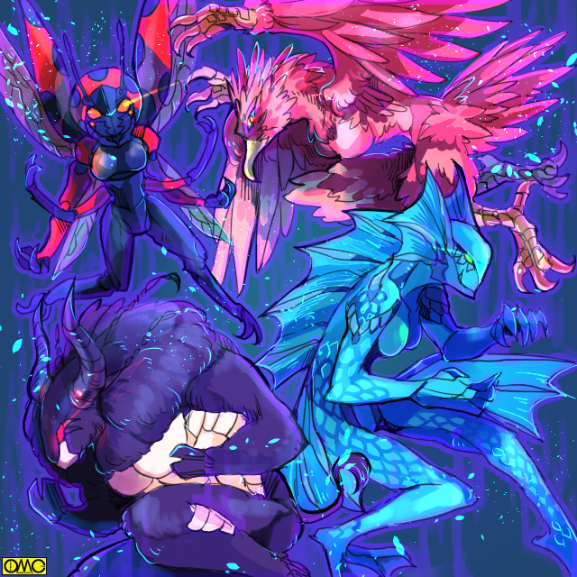
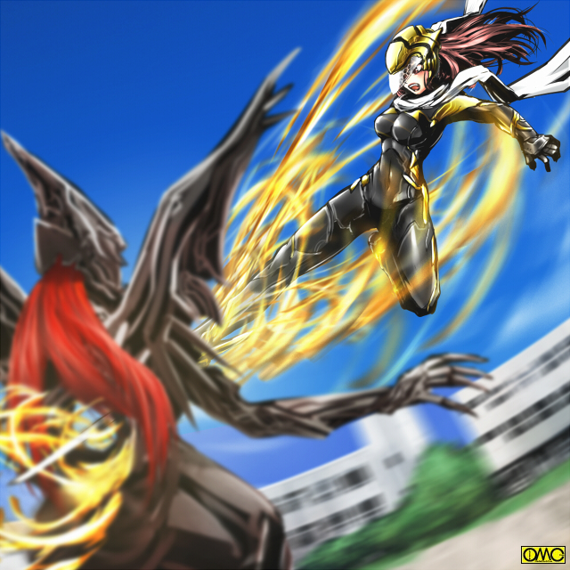
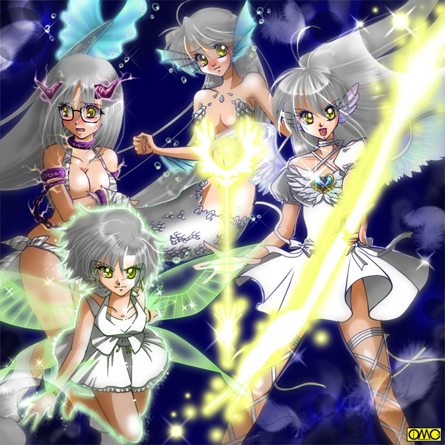

前編あらすじ
「ロゼ。いずれわれらは蘇る。そして貴様に復讐してやるぞ」
太古にアマッドネス内部で謀反をたくらみ、処刑されたはぐれアマッドネス。それがよみがえる。
「今日からこの学園に通うことになりました高石聖奈です。よろしくお願いします」
セーラ。ブレイザ。ジャンスたち三人の戦乙女は、頻発する性転換事件の調査のため、私立蒼空学園に潜入する。
「くくく。我はステゴザウルスの能力を持つもの」
そこにはすでにはぐれアマッドネスが取りついたものたちが権力を掌握していた。
「今よ。ブレイザ」
辛くもその一体を葬った戦乙女たち。だが
「とりつかれていたの……貴女達たちが」
セーラたちと友達になったまりあ。なぎさ。詩穂理。美鈴が、アマッドネスへと変身した。
ある日のことであった。
まりあは優介が恵子と談笑しているのを目撃した。
ホモのはずの優介が女子に対して見せる笑顔。自分には見せてくれない笑顔。
美鈴と恵子は例外と知っていたはずだが、まりあはやるせない思いが去来する。
裕生にアンナが付きまとう。
親友・チヒロの兄ということだかららしい。
裕生もじゃれつかせている。それだけのはずだ。
しかしそれでも詩穂理には割り切れない。
恭兵はもてる。そして彼からアプローチをかけることもある。
そのうちの一人。栗原美百合。
春風のような柔らかい女性。
その二人を見たなぎさは、ああまで女らしくするのは自分には無理だと思った。
とある一件から大地大樹を意識するようになったあすか。
「女であること」に嫌悪感を抱く彼女が、家庭科で作ったクッキーを大樹に渡していた。
それを大樹は食べて見せ「旨い」とまで言った。
ただの評価。そのはずなのに美鈴の胸はもやもやする。
「はぁ。いつになったら優介は振り向いてくれるのかな」
仲良しの四人だが元々は互いの恋愛を助け合う「同盟関係」
どうしても話題は好きな相手に関することだ。
現在は人気のない校舎裏で四人で心情を吐露し合っていた。
「私も同じ思いです。高嶺さん。ヒロくんてばデレデレと」
珍しいヤキモチだ。
「美鈴は心配です。あすかさんがああまで女らしくなった原因が大ちゃんだし、大ちゃんもその気になったりは」
「だったらあたしはどんだけ心配すりゃいいのさ。キョウ君たら。女を何人も」
届かない思いに歯噛みしていた。
「ならば奪い取れよ」
「誰？」
謎の声に警戒するなぎさ。
「好きなんだろう？ 戦って奪い取れ。力が足りないというなら貸してやる」
「ほ、本当に力を貸してくれるの？」
まりあが代表するが「協力を申し出た」と思ったのは全員一緒だ。
つまり四人とも「力を欲してしまった」
「ああ。受け取れ」
その男。栗生が腕を振るうと、保持されていた四つのアマッドネスの魂がそれぞれに融合する。
「きゃあっ！？」
「な、何かがわたしの中に？」
「何だ？ 何もかもぶち壊してやりたくなってきた……」
「や、やめて。美鈴が美鈴で無くなっちゃう」
少女たちは少女で無くなりかける。
異形への変貌が始まった。
好きな相手への報われぬ恋。そこに付け込まれて魔物に取りつかれた。だが
「助けて。大ちゃん。助けて」
「ヒロくん。ヒロくんなら……私のヒーローならきっと助けてくれる」
愛する少年に助けを求め、蟲の足と化した腕を伸ばす美鈴と、黒い獣毛に覆われ蹄の生えた右腕を伸ばす詩穂理。
「そうだよ。化け物をキョウくんが好きになるはずがない」
肌のほとんどを鱗で覆われつつあるなぎさが、踏みとどまった。
「優介。優介のためにも人間でいなくちゃ」
嘴からくぐもった声を出したまりあだが、その嘴が唇に戻る。
「何だと？」
驚く栗生。異形へと転じかけた四人だがそれぞれの思い人である少年を支えに、すんでのところで人に戻る。
「驚いたな」
負け惜しみではない。心からの驚嘆を示す栗生。
「参ったな。一度つけた以上はやり直しがきかないんだが……まぁいい」
栗生はさほど落胆した様子も見せず、話し続ける。
「心に闇のない人間などいない。もう一押しだ。きっかけさえあれば貴様らは人間でなくなり、我らの配下になる。せいぜい働いてもらうぞ。くくく。はぁーっはっはっ」
栗生は立ち去っていく。
四人は何とか『悪意』をおしこめると、精根尽き果てたように跪いた。
「ど、どうしよう。美鈴、人間じゃなくなったの？ なんだろう。この気持ち悪い感じ。それが美鈴を暴れさせようとしている」
「ああ。あたしもだ。今まで感じたことのない黒い感情が……すべての物を破壊してやりたい気持ちが渦巻いている」
「大丈夫です。人間としての良識さえあれば抑えられるはずです。人間は弱いけど強いはず。その強さを忘れなければ」
「そうよ。優介に好きになってもらうためには、人間やめるわけにはいかないもの」
四人の少女はこうして悪魔を内包した。
いや。卵を温め続けていたというべきか。
それが今、孵化してしまった。
「クッククク。礼を言うぞ。戦乙女たちよ」
「生前」のまりあの声にエフェクトをかけた感じのアマッドネス特有のくぐもった声。
「取りついたはいいがこやつら。なかなか体を明け渡しはしなかった」
半漁人がくぐもったなぎさの声で言う。
「だが貴様らが嫉妬心をあおってくれたおかげで」
およそ「素体」が詩穂理と思えないほど尊大な物言いの猛牛怪人。
「そのどす黒い感情にシンクロしたことで魂を融合させ、こうしてわれらは肉体を得たのだ」
美鈴の肉体を利用した蟲の異形が得意げに言う。
「ふふふ。覚醒させるためにわざわざしいたげて負の感情を高めていたのだが、貴様ら戦乙女がきっかけとはとんだ皮肉だな。それもお前らが唱えるという『愛』がもたらしてこのざまよ」
すでに勝ち誇っている栗生。精神を揺さぶる目的なのは間違いないが、それは効果覿面であった。
「みろ。この醜い姿を。これがこいつらの本性よ」
確かにものの見事に『化け物』と化していた。
美少女達が無残な姿だ。
「人を愛するなどといえば綺麗だが、他者にとられるのを嫌うあまり欲望が走り、こうして化け物になったのだ」
配下を化け物呼ばわりだが、完全に上に立つ存在らしい。
ゆえに言われている四体も黙って耐えていた。
今にして思えば、まりあたちがああまで服従していたのも、この異形たちに半分心を乗っ取られていたからではないか？
この「変身」は戦乙女たちに絶望感を突き付けた。
「何ということっ。わたくしたちが引き金を引いたというのですか？」
悲鳴にも似たブレイザの叫び。
「人を愛するのは素晴らしい事です。けど、きれいごとだけじゃない」
ジャンスがつぶやく。
二人とも栗生のセリフを繰り返していた。完全に打ちのめされていた。
「でも、こんな気持ちに付け込むなんてっ」
かつて幼なじみの少女が同じように「嫉妬」から異形に転じ、それを制することの出来なかったセーラが泣きそうな声で言う。
対する「怪人」たちは得意げだ。
長いこと魂だけだったのが肉体を得たのだ。それゆえに高揚感を感じていた。
「復活させてくれた礼に我らの名を教えてやろう」
いうまでもなく、追い討ちの皮肉だ。
同時に武功争いのための名乗りでもある。
「まずは我。オオタカの化身。タオ」
「われはマト。トビウオの力を持つ」
「そしてわが名はイギ。水牛の戦士」
「最後の私はナホ。テントウムシの能力をもつ」
各々名乗っていく。
しかし聞こえていなかった。
戦乙女たちはあまりの展開に呆然としていた。
いや。セーラはかつて幼なじみの友紀が転じた「ファルコンアマッドネス」と闘ったゆえ『免疫』があったのか切り替えが早かった。
「どうして！？ どうしてそんな付け込まれるほどの闇を抱えてしまったの？ まりあさん。詩穂理さん。なぎささん。美鈴さんっ」
悲痛な叫び。だが半人半獣と化した「元・少女」たちは答えない。
代わりに栗生が低く「やれ」とつぶやく。
「命令」を受けまりあ……否。もはや「まりあ」とは呼べない。
便宜上「ホークアマッドネス」と呼ばれるそれの腕が背中の翼と一体化していく。
完全に腕が消失し、代わりに翼が巨大化した。
乳房がなければ人のサイズであるがタカそのものだ。
そのホークアマッドネス・飛翔態が羽ばたいたと思うと高く飛び上がる。
「このパターンはっ！？」
「いけないっ」
覚えのある戦乙女たちは防御態勢になる。
高度をとったホークアマッドネスは「鳥人体」へとなり腕を戻すと、羽で作られた手裏剣を雨あられと降り注がせる。
「やっぱりっ」
セーラもブレイザも経験済みの手口で、予知していたので間に合った。
これはかろうじて防いだものの、この隙で他の三体の攻撃を食らってしまう戦乙女たち。
なぎさ……「フライングフィッシュアマッドネス」はセーラを圧倒する。
詩穂理……「バッファローアマッドネス」は角を突き立ててブレイザに突進する。
美鈴……「レディバードアマッドネス」は羽音を立ててジャンスに挑みかかる。
学校を戦場として、３対４の戦いが始まった。

このイラストはＯＭＣによって作成されました。
クリエイターのハセフーコさんに感謝！
城弾シアター１５周年記念作品
「戦乙女セーラ」
ＶＳ
「ＰＬＳ」
後編「化身」
この作品は「ＰＬＳ」と
「戦乙女セーラ」のクロスオーバーで
そのため原典と違う設定や展開をしています。
また、それに伴い
第三者による改変を容認してはいないことを
ここにお断りします。
「何だ！？ あれは？」
「映研が撮影しているのか？」
呑気というには気の毒かもしれない。
いきなりそんな「怪人」が「日常」に現れるはずがないのである。
ましてやそれがこの学校のアイドル的存在のまりあや、オリンピック候補のなぎさ。教師より博識ではないかという詩穂理。女子力の塊のような美鈴の「変化」した姿とは思わない。
だが部活動の中を突っ切る際にアマッドネスと化したなぎさと擦れ違いスパッと切れて出血。
猛牛と化した詩穂理に突き飛ばされ、その衝撃で吹っ飛ばされたのを見てこれが「惨劇」と理解した。
「うわぁーっ。化け物だぁーっ」
しかし逃げようにも正門はまさにバトルの真っただ中。
裏門に逃げようとするがまりあ…ホークアマッドネスの手裏剣が足を止める。
結果として全校生徒の大半が校舎に封じ込められた。
「人質」をとられた形だが、正直それを気にする余裕のない戦乙女たちだった。
分散された三人の戦乙女。
１対１が三組といいたいが、ここに遊撃であるホークアマッドネスがいる。
その連携に気をつけないといけない。
セーラがそんなことを考えていたらいきなり頭上からつかまれた。
ホークアマッドネス・飛翔態にとらわれたのだ。
「うわあああっ」
飛ぶことのできるセーラであるが「とらわれた状態」で急上昇はすさまじいＧもあり思わず悲鳴が出る。
「離して。離して。まりあさん。正気に返って」
素体となった少女の心に訴えかけるが、鷹の異形は無視を決め込んでいる。
上昇は約１５０メートルの高さで止まった。
元が少女で非力ゆえこの高さが限界だったのか？
あるいはこれだけあれば十分だから止まったのか？
「いいだろう。離してくれる」
どちらにしてもこの高度で離すのは殺意以外の何物でもない。
「死ね」
言葉にも明確に殺意を籠め、ホークアマッドネスはセーラを解き放つ。
セーラー服姿の少女は重力にとらわれ落ちていく。だが
「キャストオフ」
冷静にまずは攻撃重視のヴァルキリアフォームに。そして
「超変身」
右手の赤いガントレットをたたくと、レオタード姿のフェアリーフォームに転じ、光の翅を出現させ、その飛翔能力で再び元の高さへと。
「な、何！？ 貴様……宙を舞えるだと？」
羽ばたいてホバリングしているホークアマッドネスが驚きを隠せない。
どうやら太古の時代に戦乙女とは戦ってはいないらしい。
「おあいにく様。空をテリトリーとしているのはあなただけじゃないの」
ここでは強気に「敵」に対する態度。だがわずかな期間とはいえどクラスメイトとして接した間柄ゆえに思いもある。
「お願い。まりあさん。人間に戻って。貴女とは戦いたくないの」
対ファルコンアマッドネスで見せた「甘さ」がここで顔を出す。
「くくく。無理だな。この娘は長年あの小僧を思い続けていた」
水木優介のことであるのは間違いない。
「いくら思いをぶつけてもなびかぬ相手。それをお前があっさりたぶらかした瞬間に心が闇に飲み込まれた。ゆえにこうして我は肉体を得たのだ」
「それは誤解……と、言っても無駄ね」
まりあと闘うこと以外にも、以前の友紀の一件を思い出して暗澹たる気持ちになっていた。
（あの時そのままだわ。あの時はあたしの躊躇が逆に友紀を苦しめた。それなら……）
セーラは気迫をその目にたたえた。
「待ってて。まりあさん。あなたを今、その化け物から解放してあげる」
「勇ましいな。怖い怖い」
おどけてみせる。癪に触るがセーラは無視を決め込んだ。
「だが忘れるなよ。お前が男をもう一人たぶらかし、そしてもう一人の女の心を闇に落としたことも」
ホークアマッドネスもお構いなしに続ける。
「はっ！？」
恭兵も自分にかかわっていた。
それを思い出した瞬間の隙を狙い澄ましたように下からの衝撃。そして捕縛。
「だ、誰？」
セーラはしがみつく相手を見た。
フライングフィッシュアマッドネス……なぎさの変わり果てた姿だ。
眼下を見ると温水プールのある建物。その屋根から飛んだ。
その天井のガラス部分が破られている。
プールからそこを突破してセーラに飛びついたのだ。
水の助けを得ればそんな芸当も可能だった。
「くたばりやがれぇぇぇぇぇぇ」
翅にしがみつく。それゆえか高度を維持できない。
（トビウオなら滑空でしょ？ 垂直に飛ぶんじゃないわよっ）
心中で悪態をつくセーラ。
（ま、まずい。いくらフェアリーでも自分以外にもう一人。それも落とす気満々の相手にしがみつかれては）
ゆっくりだが落ちていく。屋根が迫る。
（飛べないなら）
セーラは衝撃に備えるのと、もう一つの理由からマーメイドフォームへと転じた。
建物の屋根を突き破り温水プールに落下した。
衝撃で引き離される両者。
（やはりテリトリーである水中に引きずり込んだわね）
セーラの眼前にフライングフィッシュアマッドネスがゆらりと潜水していた。
（でも今のあたしにとっても水中はバトルフィールドよ）
半漁人と人魚の戦いだ。
レディバードアマッドネスは早くはないが、小回りのきく飛行能力を有していた。
直線的なら狙いもつけやすいのだが、変則的で的を絞れないジャンス。
とりあえず右手のリボルバーではきちんと狙い、左手のオートマチック拳銃では「当たればラッキー」程度の感覚で「ばらまいて」いた。
ところがそこにもう一体の空飛ぶ怪人。ホークアマッドネスが現れた。
空から二体同時の攻撃。
手裏剣ではなく腕を出して剣での攻撃だ。
さらには翼を完全に仕舞い込み、地上に降りて細腕を豪腕に変化させて剣で切りかかる。
上と下の連携攻撃。
そもそも「素体」となった「まりあと美鈴」も仲が良かった。
そのせいもあってか抜群の連携だった。
（くっ。あたしたちじゃこうはいかないわね）
変なところで感心しているジャンスは、体育館まで押し込まれた。
（なるほど。遮蔽物のあるところであたしの弾丸をよけるのね。遮蔽物はすり抜けるけどね。とはいえ）
物陰から出ては攻撃を仕掛けてくるレディバードアマッドネスは厄介だった。
ホークアマッドネスは他への援護か飛び出した。
しかしテントウムシの異形が睨んでいる。
とてもではないが、あの気の小さな美鈴が元とは思えない。
そのままブレイザの背後に回るホークアマッドネス。バッファローと二体でブレイザを挟み撃ちだ。
「くっ。前方の猛牛。後方の猛禽ですか」
気持ちを落ち着かせるためか軽口めいた言葉を発する少女剣士。だが
「タオ。こやつはこのイギにやらせろ」
「何？」
猛牛の怪物が一対一を要求した。
「ふふ。やはりヤキモチゆえか、この器の少女が望んでいるわ」
二足歩行の水牛はまるで仇を見る目でブレイザを見ている。
（くっ。あれを見てしまった詩穂理さんは嫉妬心にかられ、それでアマッドネスに堕ちたと。不覚）
理知的な詩穂理が元なのに、殺意を隠そうともしない目をしているのを見て、ブレイザはおのれを責めた。
「そういうことか。ではその間わたしは……あっ」
様子を見にやってきた優介を見つけたホークアマッドネス。
「優介ぇーっ」
その瞬間だけまりあ本来の声が出た。
あっという間に飛翔態になると、その美少年をさらって高い空へと消えていった。
「……」
「……」
呆然とする両者。それほどまでに見事な「色ボケ」ぶりだった。
（高嶺さん。こんな時まで……くっ。いかん。器の少女が今ので心を取り戻しかけたわ）
強引に「人の心」をおしこめるバッファローアマッドネス。
「あわわわ。どうしましょう。こんなやりにくい相手だなんて」
セーラの使い魔。黒猫の姿のキャロルが狼狽している。
「うむ。それ以上に数で負けている。やむを得ん。こうなったら助けを呼ぶか」
落ち着き払った黒犬・ドーベルが判断を下す。
「任せな。ひとっとぴいってくらぁ」
カラスの使い魔。ウォーレンがやはり空へと消える。誰を呼ぶかは一人しかいない。聞くまでもなかった。
ただ相手はこの場所を知らない。案内を要するからウォーレンは迎えに出た。
「我々は」
「ええ。それぞれの主を助けないと」
黒猫と黒犬は主の元へと走る。
「な、何が起きているんだ？ なぎさがあんな化け物に……」
さんざんアプローチをかけているまりあも怪物へと転じたのにかかわらず、最初になぎさの心配が出た恭兵。
「わからねぇ。だが助けねえとよ。シホを人間に戻さないと」
考えるより行動。裕生は牛になった幼なじみを探して駆け出した。
「美鈴……」
大樹もその巨体で走り出した。体育館を目指している。
「くそっ。なぎさのバカがっ」
恭兵も温水プールへと走り出した。
温水プール。フライングフィッシュアマッドネスとセーラ・マーメイドフォームの戦い。
セーラはこの形態の時は長い髪がいわば「えら呼吸」をして酸素を取り込むため、活動時間に制約がなかった。
しかし魚類型のアマッドネスではアドバンテージにはならない。
二人はにらみ合いを続けていた。
やはりフライングフィッシュもセーラと闘った記憶はないらしく、様子をうかがっていた。
セーラの方は躊躇もあり、こう着状態に陥っていた。
それでも心を決めた。
（仕方ないわ。ちょっと痛いけど我慢してね。あなたを人間に戻してあげる。もともと女の子だから大丈夫だし）
アマッドネスは爆発して果てると素体となった人間が男性だった場合女性化する。
アマッドネス怪人が女性ばかりで、その時点で倒されるからか。
あるいは再生の際に男性とする遺伝子情報を得られないためか分らない。
セーラはいつも相手を女子に変えてしまうことを割りきれなかった。
しかしこの場合はもともと女子だ。だから躊躇はその点ではない。
（でも、元の姿を思うと殴りにくいわね）
スポーツ少女らしい快活な笑顔のなぎさ。それを思うとやりにくい。
（ううん。だからこそあんな醜い化け物にしとくわけにはいかないわ）
単に焦れたか。あるいは憎悪が勝ったか。
打って出たのはフライングフィッシュアマッドネスだった。
手首から生えているひれを使って切りつけてくる。
（くっ）
水着は魔力の鎧だから傷一つつかないが、むき出しの手足や顔が傷ついていく。
（凄まじい殺気。いや。憎悪。なぎささんの嫉妬心をアマッドネスが増幅させ、その負の感情がアマッドネスを強くする。あたしにとっての悪循環だわ）
防戦一方のセーラ。だか相手の攻撃を布の鎧」で受け止め、隙ができた瞬間に、逆襲の突破口とすべく携帯していた伸縮警棒を「銛」へと変化させる。
（ごめんなさいっ）
心中で詫びつつ銛を突き刺そうとする。
ところが鱗に阻まれて刺さらない。
小さな魚相手なら相対的に巨大な刃物で突き刺す形だが、人間大の相手で鱗も大きくて厚い。
しかも角度の問題で微妙に刺さりにくい。
（くくく。無駄だ。貴様も水の中でそれなりに動けるようだが我の比ではない）
水中だから言葉は届かない。だがなんとなく正確に考えていることが理解できたセーラ。
（それなら）
セーラはプールの底に足をつけると、頭上に両腕をかざす。
深さのあるプールだ。だから空中から落ちても激突していない。
沈むセーラを追ってくる海人。
それを見てセーラは腕を回した。
本来なら水陸どちらでも相手をリフトアップして、猛烈な回転を加え、できた大渦ないし竜巻に相手を放り出して粉砕する大技。トルネイドボンバー。
その空回しでとりあえず大渦を発生させる。
そのままフライングフィッシュアマッドネスを巻き込んで放り出すつもりだ。
異変が起きた。
フライングフィッシュの両足が融合して魚のそれになる。
人の脚なら上下。しかしそうではなく魚同様に左右にくねり推進する。
骨格まで変わったとしか思えない。
胴体も変化していく。
丸く、そして流線形に。顔も魚そのものに。両腕は大きなひれへと変化していた。
半漁人ではなく本物のトビウオ。それも人の大きさである。
（くっ。つまり人であり続けようとした反動で、ここまで人でないものへと変わったということなのね）
そしてもっとも泳ぐのに適した肉体に変化したフライングフィッシュアマッドネス・遊泳態は大渦に逆らわず流れに乗る。
渦を自分の力で加速して、その力を逆に利用してセーラに攻撃を見舞う。
その際に思わず水を飲んだセーラは、それがしょっぱいことに驚く。
（なんでプールの水が海水のように？）
なぞはすぐに解けた。巨大トビウオは全身の鱗をはがしてそれも渦に乗せていた。
（わかったわっ。あれがこの真水を海水と同じにしている。以前のようなことは期待できない）
魚類タイプのアマッドネスが生活環境と違う水で苦しみ、そこから勝利したことがセーラにはあった。
しかし自分から環境を整えられてはそれは期待できない。
しかも鱗をばらまいたのはそれだけが目的ではない。
すぐに再生されたのでフライングフィッシュアマッドネス自体は無傷だが、漂う凶器がセーラ・マーメイドフォームのむき出しの顔や手足を傷つける。
体育館のレディバードアマッドネスとジャンスの戦いはジャンスが押されていた。
レディバードは上空で口から毒液を吐く。胃酸の変化したものなのか強酸性の液体だ。
本人の喉や口も焼けるが、それはアマッドネスの再生能力があるので問題なしであった。
「うわっとと」
大げさによけるジャンス。
「もうー。年頃の女の子がそんな大口開けてちゃダメでしょ。美鈴さん」
可愛い顔立ちだがセーラ／清良よりシビアに対応できるジャンス／順であった。
助けるために撃つ覚悟はできていた。
だから躊躇はない。ただ単純に当たりにくかった。
複雑な動きで狙いを絞りにくいこと。
小さ目なこと。
そしてやはり
（うーん。やはりあれが美鈴さんと思うとやりにくいわ）
土壇場で割り切れていない。
だが当の美鈴……だった存在は殺意を隠す気もない。
その姿がさらに変わる。
ヘルメット状の部分が大きくなり、背中全体を覆う「甲」になる。
下半身の脚のつき方も人と違ってきた。
体型も円形に近くなる。
人のサイズではあるがテントウムシそのものの姿へとなった、
（そこまで人間やめちゃうなんて……人の心を捨てたということかしら。それだけあたしに対する「憎しみ」が強くなっちゃったみたいね）
レディバードアマッドネス・成虫態は例の強酸性の液体を宙に吐く。
それを翅であおりその結果として毒霧になった。
（どうりで体育館なんかを選ぶはずだわ。ここなら風で散ってしまうこともないわね。ちょっと息を止めといたほうが……い、いや違うっ）
噴霧はしばらくは漂う。だが霧散しない。一部は雨のように降ってきた。
（狙いはこっち？）
いくらジャンスが凄腕のガンナーでも「雨」は撃てない。
逃げるしかない。
それをあざ笑うようにそばを飛んでいくテントウムシの異形。
「つっ」
その羽音がむやみやたらに耳につく。
（違う。この「音」自体が攻撃手段。音。すなわち振動がダメージをあたえてくる）
ジャンスの分析は当たっていた。
「くふふ。なかなかしぶとい。ならこれはどうだ？」
レディバードは天井に向けて飛ぶと照明をつりさげている部分に毒液を浴びせた。
腐食していく。
そしてそれを立て続けに行う。
やがて自重に負け落下していく。
「ちょ……そんなのあり？」
こうなると自衛のために照明を撃つしかない。
その隙に背後から接近したレディバード。
「しまっ……」
時すでに遅し。
ジャンスの背中に六本の「足」で止まると、レディバードアマッドネスは左右に顎が展開するその肉食性の口で首筋にかぶりついた。
グラウンド。ブレイザＶＳバッファローアマッドネス。
半分は人であるが、まるで闘牛のようだった。
「キャストオフ」
ブレザー姿から和服の少女剣士姿に。
屋内の戦いではないため校舎内からたくさんの生徒が戦況を見守っている。
彼らはホークアマッドネス……まりあが飛び去ったのを知らないため、逃げられないと思い込んでいる。
だからブレイザが水牛の化け物を倒してくれるのを固唾をのんで見守っていた。
それが学園一の才媛。詩穂理の変わり果てた姿とも知らずに罵声を浴びせている。
（糸井……お前は一体？）
あすかも見ていた。
まさかあの化け物と真っ向勝負をするのか？
自分とて退かざるを得なかったのに？
「まるで変身ヒーローみたいでかっこいいにゃ」
恵子もそばにいる。語尾から察するにまだ余裕があるらしい。
浴びせられる罵声も「自分への声援」と変換させたバッファローアマッドネス。
気持ちよさそうに首を回す。
「うーん。檜舞台じゃないか。そう思わんか？ 剣の戦乙女」
心なしか楽しそうに聞こえる。
実際になぶるのを楽しみにしている。
「……ぜんぜん。むしろ最低の気分ですわ」
やはり「知り合い」を斬るのは気が乗らない。
（以前はセーラさんを叱咤したのに……そのセーラさんの甘さがうつったのかしら？）
だから今度は自分を叱咤した。
（しっかりしなさい。ブレイザ。奴を斬れば詩穂理さんは元に戻せる。ここはいくさ場。気を引き締めないと）
「ではこの面前で公開処刑と行くか。我から寝取った貴様をな」
「失礼な。そんなふしだらではありませんわ」
「いいわけならあの世でしろ」
「その言葉、そっくりお返ししますわ。詩穂理さんに取りついたのを、わが身の不運と知りなさい」
「ふふふ。行くぞ」
殺し合いなのにわざわざ宣言することに違和感を覚えたが、バッファローアマッドネスが突っ込んできては考えてられない。
（初撃を躱しできた隙に後の先をとる）
猛スピードで突っ込んでくるバッファローの角を食らわないように紙一重でかわそうとした。
その方向が悪かった。バッファローアマッドネスの右腕の餌食。
しかも繰り出したのは拳ではなく蹄。右腕の手首から先が牛の足そのものだった。
突っ込んできた勢いと、腰を中心にしたひねりを利かせたストレートパンチがブレイザの頬桁を砕く。
悲鳴も上げずに吹っ飛んでいく。
まともに食らって吹っ飛ぶブレイザだったが、それでもいつまでも伸びていない。
「あつつ。詩穂理さんが女の子の顔を殴るような無頼漢だとは、夢にも思いませんでしたわ」
強がりと挑発を兼ねた言葉を口にしつつブレイザは立ち上がる。
エンジェルフォームなら攻撃力と引き換えに、肌の見えている部位も守られている。
衣類の部分だけにガードを残し、後はすべて攻撃力に回したヴァルキリアフォームだったのが災いした。
「無頼にもなる。貴様はこのシホリの意中の男を籠絡したのだ。恨まれて当然」
「たわごとを。意図してそのように思い込ませ、詩穂理さんの負の感情を持たせることでやっと顕現できた『寄生虫』が」
これは明らかな挑発だ。
「おのれ。そんな口のきけぬようにその平たい胸を串刺しにしてくれる」
恥ずかしがっていた胸の大きさだが、実は詩穂理はひそかに自分を見下していたのではないかとブレイザは思った。
怒り任せに突っ込んでくるバッファローに対して居合の体勢で待ち構える。
角が胸板を貫くかと思いきやもっと下。腹部に右腕の「蹄」が角より先にめり込んでいた。
「ぐふっ」
子宮の辺りだ。本来は男のブレイザだが現在は女の身。大事な部位には違いない。崩れ落ちる。
「ふふふ。そんな安い挑発に乗ると思ったか。ま、そうは考えてなかったろうが、この使い方は考え付かなかったようだな」
いわば「角の攻撃」と決めつけた思い込みが招いた結果だ。
「しかし手の内を二度までをさらしたか。それならそれで角と蹄の二択を迫る戦い方もあるが、その様子ではそこまでもいるまい」
本当に上から目線で言う。
（こいつ……力任せに見えたのはフェイク？ そう思い込ませて頭の良さを隠していた。まさかそんな部分で詩穂理さんについたわけでは）
何か考えていないと気絶しかねなかった。
「策で敗れ、そして力にも屈する。完全なる敗北で絶望と屈辱ののちに死を与える」
非道だった。人とは思えぬ。
まさにそのままで左手の五本指が蹄へと変わっていく。
そのまま両手……否。「前足」を地におろす。
両足……「後ろ足」も変化する。四つん這いではない。完全に四足歩行の生き物になった。
そこには一頭の水牛がいた。
二本の脚以上のパワーをその四足で生み出し、角を突き立てたバッファローアマッドネス・突進態が迫りくる。
「くっ。そこまで畜生に堕ちるとはっ」
だがむしろ人の姿からかけ離れたことで、ブレイザはやりやすくなった。
これなら角にだけ集中できる。
彼女は豪力態。ガイアフォームへと転じる。
狙いは攻撃手段であり頭部を守る盾でもある角。
すれ違う刹那にかわして斬馬刀ガイアブレードをふるう。
アルテミスの細い剣どころか、通常のブレイザソードでもこの突進では弾かれて角を切れないと判断したからこの大剣だ。
多少大ざっぱでもこれならダメージを与えられる。
狙い通りの角に当てた時だ。
「きゃあっ」
強烈な痺れを感じて思わずのけぞる。
バッファローアマッドネス・突進態は勢い止まらず走り去ったので追撃を受けなかったが、ブレイザもしばらくしびれが抜けなかった。
「ま、まさかその角が電気を帯びているとは？」
どうりで蹄の攻撃を捨てたはず。
二の手どころではない。さらに隠していた。
「ぐふふふっ。かすっただけで大ダメージ。貴様が生き延びたいなら無様に背中を見せて逃げるしかないぞ」
あからさまな挑発だ。武人の心を刺激する。
「なら角ではなくそのそっ首を跳ね飛ばしてくれてやりますわ」
それでもアマッドネスを爆散させればバッファローから詩穂理に戻せる。
しかしガイアフォームの限界時間が来てしまった。
裏門近くにある高い樹の上に優介は置かれていた。
自力で降りようにも高さゆえに風があり、なかなか踏み切れなかった。
ホークアマッドネスはいない。いや。戻ってきた。
へし折ったらしい木の枝を、くちばしにくわえて飛翔態で帰ってきた。
それをすでにある程度できている部分に足す。
「巣」を作っていた。
手で行わずくちばしを使うあたり、ますますタカに近づいていた。
優介はだいぶ冷静になった。
そこで一つの可能性として「巣作りするまりあ」の姿を携帯電話で録画していた。
そしてまた飛び去る。
仲間の援護もせず、ひたすら巣作りに励んでいた。
怪人となっても優介との愛が最優先だった。
温水プール。発生した大渦を見て駆け付けたキャロルが驚愕する。
「これはトルネイドボンバー？ ならもはや勝敗は――ち、違うわっ。セーラ様が押されている！？」
渦の中央にいるのはセーラだが、その渦は今はフライングフィッシュ遊泳態が作っていた。
「何だ？ 何が起きているんだ。これは？」
恭兵も駆け付けたが何もできない。
水中。セーラはじっと耐えていた。
（そろそろ変化してもいいころ。あの魚そのものの姿。そしてえら呼吸でダイレクトに水を取り込んでいる。そろそろ）
タイミングを合わせたわけでもあるまいが、フライングフィッシュの泳ぐスピードが緩む。そして止まった。
苦しそうに動くと、再び半人半獣の「海人体」へと戻る。
（な、何が起きたのだ？ く、苦しい）
のど元を押さえるのは「人間だった時」のくせか。
（やはりね。これをえらから取り込めば苦しいはずよ）
セーラはプールの底にある白い塊をとって見せる。
（そ、それは？）
「なぎさの知識」がそれを消毒用の物と伝えた。
それをもろにえらから取り込んだのだ。
アマッドネス・マトはそんな知識はない。
なぎさにしてもプールの水は安全という認識しかない。
無防備になるのも当然だった。
（く、くるしい）
肺呼吸も可能な肉体になってフライングフィッシュアマッドネス・海人体は水面から顔を出す。そのまま水を出てしまう。
呼吸をするのを最優先して周辺に気を配る余裕もない。だから接近にも気が付かなかった。
そこに恭兵がいた。
端正な顔を怒りにゆがめていた。
「何してるんだよ？ お前はさ？」
普段の「学園の貴公子」とは思えない乱暴な言葉遣い。
（キョウくん？）
封じ込めたはずのなぎさの心が動きを止めさせた。
彼は見上げる半漁人……その口にためらわずキスをした。
「ひゃああ」
怪人を追って浮上したセーラはまさかの光景に赤くなる。
そしてもう一つの「まさかの光景」
真横に広がった魚の口が「少女の唇」へと戻る。
そこを中心に半漁人の顔がなぎさへと戻っていく。
ぽろぽろと鱗。ひれが落ちていくと一糸まとわぬ姿に。
（お、おのれぇぇぇぇぇっ）
「邪悪な魂」が抜けたのがセーラとキャロルには感じられた。
醜悪な姿にもかかわらずためらいなく口づけをしたその行為。
「愛」がそれを追い出したのだ。
全裸のなぎさに纏いつくように下着。そして制服が再生されていく。
（爆発もしてないうえにこの再生。やはりアマッドネスの力そのものは抜けきってないわね。でも、とりあえずは）
気を失ったなぎさを両手で抱えた恭兵。
「まったく。バカだバカだと思ってはいたがこれほどとはな。僕があんな半漁人に心惹かれるわけないだろう」
「でも、それならどうしてキスしてあげたの？」
この時のセーラは『女子高生生活』もあり完全に女の子だった。
「決まってるだろ」
もう他の女の子に見せる気障な表情の金髪美少年。
「お姫様は王子様のキスで目覚めるものなんだよ」
ここまで気障だと逆にほめたくなる。セーラはそう思った。
その彼女に恭兵は真顔で言う。
「なぎさと闘っていたのは君なんだろ。戦える力があるんだね？」
状況証拠でそう思ったようだ。
正解なのだがどう答えたものか迷うセーラ。
「頼む。その力でまりあも救ってやってくれ」
そういわれてセーラはまりあ……ホークアマッドネスを思い出した。
「なぎささんはお願いしていい？」
「ああ。こいつとは腐れ縁だ。保健室くらい付き合ってやるよ」
それを聞いて「女の子」として満足したセーラは、フェアリーフォームに転じるとホークアマッドネスを探すべくキャロルとともに飛び去った。
体育館。
まるで吸血鬼のようにジャンスの首筋に歯を立てるレディハード。しかし
「ふっ。この距離ではバリアははれないな」
割と余裕のジャンスが、密着したレディバードの腹部に二つの拳銃の銃口を向ける。
むろん見えない。だが背中に密着しているのはその六本脚が示す通り。
それに向けてでたらめに乱射する。
「ぎゃあああああっ」
見もしないでの射撃だがさすがに至近距離。十数発の弾丸を食らう。
思わず離れて上空に逃れてしまう。
首の出血にかまわずジャンスは黒いリボルバーをまっすぐにのばし、ピンクのオートマチック拳銃の銃口にはめ込んだ。
銃なのはイメージだけ。
魔力でできたそれは魔弾を射出するためのもの。変化は自在だった。
連結した銃がガトリングガンへと変化する。
同時にジャンスの姿も黒いボブカットにネコミミが鎮座するゴスロリ姿。ロリータフォームへと。
これは攻撃手段を変えたのもあるが、肉体を再構築するために超変身したという方が大きい。
首の傷がふさがった。そして銃口を上に向け巨大テントウムシめがけて乱射する。
「どっせぇーいっ」
めちゃくちゃだった。アマッドネス以外には基本的にすり抜けて無害だが、それでも多少は物理的に影響もある。
何発かは天井や鉄骨に当たり跳ね返る跳弾となり、上と下からの二重攻撃だ。
「こ、これはたまらん」
レディバードは高度をとるが
「ぐあっ。ま、まずい。ここにはまだ」
皮肉にも自分が散布した「毒霧」に自身がやられた。墜落する。
背中を地につけて足を痙攣させる。よくある蟲の死に方そのものだ。
蟲そのものだと不利と悟ったか、あるいは単にその形態を維持できなくなったのか。
巨大テントウムシが、人と蟲の中間の姿。「蟲人態」へ戻っていく。よろよろと立ちあがる。
追撃したいジャンスだが彼女自身も呼吸を整えるのが先決。
その隙に
「こ、ここは出直してタオとの連携で」
毒霧の漂う上空をさけ、普通に出入り口から出ていこうとする。
そこに立ちはだかる巨大な壁。大地大樹。
「どけっ」
動かない。それどころかレディバードアマッドネスを捕えた。
見様によっては愛しいものを抱きしめているようにも見える。
「ナーイス。そのまま抱えていてねぇ」
魔力消費が大きいロリータフォームから通常のヴァルキリアフォームへと戻ったジャンスは、右手のリボルバーでアマッドネスを狙う。
逸れて大樹に当たっても人間には被害がない。大樹ではかゆくすらあるまいと、同タイプのパートナーを持つシャンスは判断したのもある。
だがそんな彼女の予想とは違う展開になる。
大樹が力を籠めてレディバードを抱きしめる。
相撲でいうさば折りか。その凄まじいパワーで締め付ける。
「ぎゃああああっ。は、離せ。離すのだ」
苦悶の声をあげる蟲の異形。しかし大樹は鬼のような表情で締め続ける。
「離さん。美鈴。俺がお前をそんな姿になるように追いつめたというなら、お前が人に戻るまで俺はこの手を絶対に離さない」
要点のみ。ほとんど単語しか言葉にしない大樹が、異例の長さで言葉を紡ぐ。
その「特別さ」がおしこめられた美鈴の光を蘇らせる。
（大ちゃん……）
レディバードには責め苦の力技が、「美鈴」には優しい抱擁に感じられた。
やがてレディバードアマッドネスが動かなくなった。
あろうことかアマッドネスが単なる人間に「落とされた」。
気を失った。
オレンジ色を中心にしたカラフルな体色がアイボリーというかクリーム色という感じに変化する。
まるでさなぎだった。成虫のはずが逆行してさなぎになった。
それが「羽化」して、制服姿の美鈴が中から気絶した状態で出てきた。
「抜け殻」はぽろぽろと崩れ落ち、砂のようになって消えた。
「美鈴……」
鬼から仏になった大樹。今度は優しくそっと抱きしめる。
「思いが抱きしめる……抱きあうことで通じたんですね」
この時のジャンスは女の子としての表情をしていた。
「……」
大樹は無言で美鈴を抱えて歩き出す。ジャンスが後に続く。
（でもなぁ。爆発してないからアマッドネスの力はそのままのはずなんだよね。ま、彼なら平気かな。なんか邪心めいたものもぬけていたし）
すぐにでもどちらかの援護に回りたいジャンスだったが、本人のダメージも大きい。
ゆっくりとしか歩けなかった。
何度か突進をかわしたブレイザだが「布の鎧」に守られていない部分に、猛牛の角による裂傷が増えていく。
そして感電のダメージが蓄積する。
動きを止めてから確実に心臓を貫く気……むしろなぶり殺しに思えるバッファローの攻撃だった。
（さて。こうなったらわたくしも覚悟を決めないと）
ヴァルキリアフォームのままブレイザソードを腰だめに構える。居合抜きだ。
（狙いは喉元。ぶつかる直前にアルテミスフォームになって斬る）
斬る覚悟ではなく、「命を捨てる」覚悟だった。
（命を捨てて生を拾う。そんなところですわね。これは）
一方の水牛もそんな覚悟を感じ取った。
「面白い。貴様の最後の勝負だ。受けてやろう」
もとより貫くつもりだったのだ。これも一興と猛牛は考えた。
猛烈な勢いで走り出した。
互いに相手に集中していて接近者に気が付かなかった。
走るバッファローアマッドネス・突進態に一台のサイドカーが近寄る。
「そらよっ」
そのカーゴ部分から一人の少年が飛び乗った。
「な、何ものっ！？」
「風見くん！？」
そう。飛び乗ったのは風見裕生だった。
飛び乗られたバッファローアマッドネス・突進態は驚いて急停止。
背中の存在をすぐさま振り落とそうと暴れるが裕生は持ちこたえている。
その間にサイドカーモードから黒犬に戻ったドーベルがブレイザの元に駆け寄る。
「ご無事でしたか。ブレイザさま」
「ドーベル。あれはどういうことです？」
眼前の「ロデオ」を指し示す。
「彼に協力を仰ぎました。力づくでも策でもダメなら、搦め手と思いまして」
一方のバッファローアマッドネスは猛烈に暴れて、邪魔者を振り落とそうとしている。
しかしさすがに裕生は日ごろからスタントマン目指して鍛練を続けているだけのことはある。
「暴れ牛」は専門外とはいえど、あっという間にまたがって自分のズボンのベルトを水牛の首に巻きつけ「手綱」とする。
「ええい。降りろ」
焦れて叫ぶイギ。
「やなこった。絶対に離すもんか。降りないぜ」
その言葉通りいくら暴れても裕生は降りなかった。
「風見さん。危険です。離れてください。それにその角は電気を帯びてます」
「今オレが離れたら、こいつは二度と人間に戻れなくなる気がする。シホ。聞こえているか？ 頼む。オレが悪かったなら謝る。人間に戻ってくれ」
（ヒロくん？）
詩穂理の「光」がともった。
「無駄だ。こいつはもはやただのメス牛よ。人間などという脆弱な生き物ではなくなったのだ」
諦めさせようとバッファローアマッドネスことイギは発言する。
「こいつがもう人間に戻れなくて一頭の牛だっていうなら、一生オレが飼ってやる。乳搾りだってなんだって世話はオレがしてやる」
（乳搾り？ ヒロくんに飼われる？ 私が家畜に？）
その単語が意外な効果をもたらす。詩穂理のたくましすぎる想像力が発動した。
どこかの牧場。
農夫姿の裕生が牛舎に干し草を運んできた。
「元気か？ シホ」
シホと呼ばれたのは眼鏡と豊かな胸がトレードマークの黒髪の美少女ではない。
毛並みの美しい乳牛『しほり号』だった。
空想故家畜のイメージで水牛ではなく一般的なホルスタインになっていた。
「ほら。飯だぞ」
干し草がしほり号の前におかれる。
「彼女」にはそれがごちそうだった。
トーストとコーヒーがほしいとは思わなかった。炊き立てごはんと焼き魚というのもいらなかった。
ただ干し草を食べ、胃に送り、それを口に戻す反芻を繰り返していた。
「それじゃ絞ってやるな」
機械ではなく手で「しほり号」の乳しぼりを開始した裕生。
「胸」を揉まれているのに恥ずかしさはなかった。ただ気持ちよかった。
「おや？ シホ。お前」
「発情している」と判定されたしほり号の前に、一頭の『オス牛」が連れてこられた。
（え？ 私をまさか）
実際の畜産だとあらかじめ容器に入れたもので人工授精させる。
だがこれは空想。そして「悪夢」
もっと単純なイメージが出た。
しほりは一頭のメス牛として、オス牛に貫かれてしまった。
次第に大きくなるしほり号の腹。
人としての「契り」ではなく、獣として「交尾」したのに日が経つにつれ高まる母性本能。
ただし牛としてのそれが彼女を幸せな気持ちにしていた。
やがて
「せーのっ」
獣医と裕生。他にも何人かがしほり号の「大事な部分」を凝視しているが「彼女」は恥ずかしさを覚えない。
ただただ陣痛に耐えている。
裕生達が引っ張ると一頭の子牛が生まれた。
そう。しほりの子供だ。
（ああ。わたしの赤ちゃん）
母牛となったしほりは舐めて毛づくろいをしてやる。
よたよたと立ち上がった仔牛が自分の乳を飲んでいる時に「母として」の幸福を感じていた。
しかしそれも長くは続かない。
肉牛として仔牛が出荷れさて行く。
「もぉーっ」
悲しげに訴える仔牛。殺されるのが分かっているようだ。
「もぉーっ」
人の言葉を発することのできないしほりだが悲しみは伝わる。
（やめて。わたしの子供を食べないで。食べるなら私を）
「そうだな。お前もそろそろ食べてしまうか？」
（ヒロくん？）
「約束通りだ。一生お前の面倒見てやったぜ。ここでつぶされるからお前の一生もここまでだ」
文字通り首に縄をかけられた。
絞首刑のイメージを抱いたが、殺処分する場所へ連れて行くためのものだから大差ない。
（やめて。ヒロくん。私は詩穂理よ。殺さないで）
しかし人の言葉が出てこない。牛の鳴き声にしかならない。
「ああ。シホ。お前はいい肉になるよ。何がいいかな？ ステーキ。しゃぶしゃぶ。牛丼なんてのもいいかな」
その目はあくまで「家畜」いや。すでに「食肉」を見る目である。
「安心しろ。ちゃんとオレが食ってやる。お前はオレの血肉となってずっといっしょだぜ」
（ずっと一緒？ それなら食べられてもいいかも。い、いや。やっぱりいや。人として隣にいたい）
「いやぁぁぁぁぁっ」
疑似的に『メス牛』の生活を体験した「詩穂理」は、戦慄した。
同時に普段は考えもしなかった「人であることのありがたみ」を感じた。
「嫌だ。牛になんてなりたくない。人間がいい」
バッファローアマッドネスから詩穂理の声がした。
「き、貴様。心を取り戻したというのか？」
今度は怪人としての声が出た。だが暴れていたバッファローアマッドネスがとまった。
「主導権を……だ、だめだ。心を取り戻したらやはり元の持ち主のほうが強い。奪い返され……」
詩穂理が肉体を奪い返した。そして地面についていた「前足」が「腕」に戻っていく。
それどころか変身直後から蹄だった右手も五本指に。
「後ろ足」が両足に。突進態から「獣人態」にまで戻った。
「出てって。私の体から出て行ってください」
明確な拒絶を示した。心のリンクは完全に切れた。
（くそぉおおお。その男さえ現れなければ）
皮肉にも裕生がらみの嫉妬で取りついたイギは、裕生の出現で詩穂理から切り離された。
その魂は飛んでいき、やがてロゼに取り込まれた。
急速にしぼみ、同時に肌を覆っていた黒い毛が引っ込んでゆく。
胸もしぼみ、人のそれに戻る。
「おっと」
裕生がベルトをかけていた首も白く細いものに戻った。首を絞めないようにあわててベルトを外す。角も頭部に引っ込んでいく。
完全に人間の少女に戻った。しかも制服姿だ。
「やべっ」
またがっていた裕生は崩れ落ちる詩穂理をあわてて支えた。
体勢を直していわゆる「お姫様抱っこ」で保持する。
詩穂理は取りつかれ、変身して、違う生き物として戦い、そして疲れ果てて気を失っていた。
裕生の腕の中で眠っていた。
「よかった……今度は助けられたんだな」
母親を目前で水死させた裕生が言う「今度は」である。
涙が裕生から零れ落ち、詩穂理の顔に落ちた。
それが頬を伝わり口に入った。
（な、なんだかものすごいラブシーンを見せつけられた気分ですわ）
ブレイザは赤面していた。
紙一重の勝負に挑むつもりだつただけに、拍子抜けしたのも本音。
「ドーベル」
「邪悪な魂が抜けたのは感じました。ただ」
「ええ。服が再生されていたり爆発しなかったりと、アマッドネスの力が残っている危険性はあります。けど」
ブレイザとドーベルは裕生と詩穂理を見る。
腕の中で安心して眠る詩穂理。それを愛しそうに見つめる裕生。
「あの様子なら大丈夫でしょう」
よろよろと彼女も歩き出す。そこに
「ブレイザさーん」
体育館からジャンスが呼びかけた。
美鈴を抱えた大樹もいた。
こちらもうまくいったと理解した。
（さて。セーラさんはどうなったのかしら？）
高い樹の上。短時間で「愛の巣」が出来上がった。
「かんせーい。ほら。優介。ここが私たちの住まいよ」
相変わらずくぐもったアマッドネス特有の声だが、だいぶ口調がまりあのそれになっていた。
「ここでわたしたちは結ばれて。きゃっ」
照れて両手で頬を押さえる。それを怪人の姿でやると異様である。
「夫婦ってことかい？」
淡々として言う優介。
「夫婦って、キャーッ。そうなるのかしら。いずれは子供も授かって」
「わかった。じゃ卵を産めよ」
「へ？」
「鷹」だが「鳩が豆鉄砲くらった」という感じのリアクションをするホークアマッドネス。
それに追い打ちをかける優介。
「だってお前トリじゃん」
いうなり優介は携帯電話でホークアマッドネスの顔を撮影してその写真を見せる。硬直するホークアマッドネス。
「こ、これが……わたし？」
鋭い嘴。カギ爪。羽毛に覆われ白い肌がまるで見えない。
二足歩行のタカにしか見えない。
「うそ。そんなはずは！？」
「それじゃこれ」
今度は動画再生だ。
まるっきり鳥そのものの巣作りの様子が録画されている。
手を使わず、嘴で枝を運ぶ様子が。
「これがわたし？ この醜い姿がわたし？」
鼻にかけた態度こそ取らなかったものの、自らの可愛さを自覚しているまりあにしたらおぞましい姿だった。
「わかったか。鳥と人間じゃ結ばれないんだよ」
いつもとはちょっと違う感じの辛辣さを乗せた優介の言葉。
「人間じゃなくなってた？ そんな」
ホークアマッドネスが気を失った。
ここまではのっとったタオの心が強く、鷹の姿にはむしろ誇りを持っていた。
しかし優介を見つけたのがタオにとっての命取り。
仲間／友達の援護より、戦乙女の殲滅より、優介を手に入れるが最優先のまりあの心がよみがえった。
そしてその心が「鷹女」であることを拒絶した。シンクロが解けた瞬間に羽毛が舞い散り一糸まとわぬまりあが。
それにまといつくように着衣が再生されていく。
「ばーか。それでいいんだよ」
その言葉はいつになく優しさがにじんでいた。
舞い散る羽毛を見つけてセーラは巨大な「鷹の巣」を見つけた。
急いで駆け付けると優介と気を失ったまりあがいた。
「大丈夫だった？」
「おま……まぁ怪物になるよりはわかる姿か」
場にそぐわぬレオタード姿のセーラ・フェアリーフォームに驚いていた。
「だいたい想像はつくけど、何がどうなったか教えてくれる？」
事情を知ったセーラは安どした。
同時にキャロルがドーベルに連絡。そちらも片付いたとわかった。
「まだアマッドネスの力が残っているかもだけど、拒絶したなら大丈夫だと思うわ。さて。キャロル」
「はい」
キャロルは空に飛び降りると天馬としての姿を見せる。
「二人だけど大丈夫？」
「お任せください」
確認してセーラは巣の中に入る。そしてマーメイドフォームに転じ、まりあを抱えた優介がペガサスに乗るのを手伝った。
ゆっくりと着地して、そこからは優介がまりあを抱えていく。
セーラもフェアリーフォームで着地したとたんにエンジェルフォームへと。
「ちっ。役立たず共め」
監視していた栗生は吐き捨てるように言うと、次の行動に出た。
保健室へと向かっていた一同だが、恭兵に呼び止められてその場で待っていた。
「おお。綾瀬も元に戻ったのか」
「ああ。聖奈ちゃんのおかげだな」
「その高石は？」
「心配要りませんわ。ほら」
まりあをおぶった優介と、セーラ・エンジェルフォームがともに歩いていた。
それも一緒に待つことにした。
「みんな元に戻せたのね」
安堵の笑みを浮かべるセーラ。だがその表情が引き締まる。ブレイザもだ。
「危ない」
セーラとブレイザ。二人は前に出て壁となった。
すさまじい突風が吹きつける。自然現象ではない。
とうとうこらえきれず飛ばされ、守っていた裕生たちのほうへと吹っ飛ばされた。
「きゃあっ」「うわっ」「ぐはあっ」
悲鳴を上げてなぎ倒される一同。
逆にその衝撃で気絶していた四人の少女は目覚めた。
「くはあっ」
激闘に次ぐ激闘の上にこれだ。セーラとブレイザはとうとう力尽きてその場に倒れ伏す。
気絶した瞬間、高岩清良。伊藤礼という二人の男子の姿へと戻る。
「ええええ！？ 男の子だったの？ 聖奈さん」
まりあの目がいっぺんに醒めた。
「ちっ。仲間を盾にして自分は逃れるとはな」
攻撃者。栗生は背中に翼をはやしたままいう。
「あたしまでやられたら誰が守るのよ」
ジャンスは変身を維持している。
弓を向けるが狙いが定まらない。
「死にぞこない一人何ができる」
その姿が変貌していく。
まりあ同様に唇がとがる。
ステゴアマッドネスの仲間。そしてその系統で翼をもつことから予想はできた。
栗生は翼竜・プテラノドンアマッドネスへと変身した。
「さて。守りながらの戦い。どこまでできるか見せてもらおうか」
余裕のプテラノドン。一方のジャンスには余裕がない。
（こんな時に助けでも来てくれたらなぁ。こんなふうにバイクの轟音を響かせて……あれ？ ホントに来ている？）
解放されている正門から稲妻の走る黒いバイクが飛び込んできた。
金色のヘルメット。黒いバイザー。白い二本のマフラーは昆虫の翅を思わせる。
プロポーションから見て女と思われるライダーは、全くの躊躇なくプテラノドンにバイクで体当たりをする。
「ぐぎゃあああっ」
吹っ飛ばして当面の危機を回避。
そのライダーはバイクを止めると右グリップを引き抜く。それが剣へと変化する。
「来てくれたの？」
歓喜するジャンス。
「き、貴様までいたのか。大賢者・スズ」
驚き、そしてあわてるプテラノドンアマッドネス。
そう。助っ人・スズの参上だ。
「助かったよ。スズ。でもどうしてこの場所が？」
「ふっ。君の相棒が私を呼びに来てくれたのだ。おかげでここに来れた」
美鈴たちがアマッドネス化して戦い始めたときにウォーレンが救援として呼びに行っていたのだ。
ただこの場所を知らないため案内の必要があり、それで時間を要した。
連絡が届いて呼んだ直接の理由は消えたのは分かったが、むしろこの疲れ切ったところを狙われると読んだ彼女は逆に急いでやってきた。
「さて。あの時に助命嘆願した立場としては気が進まぬが、どうやら何の関係もないものたちにまで危害を加えている様子。それならばもう許すわけにはいかんな」
切っ先を向けて宣する。
「今一度、眠りについてもらう」
「ほざけ。貴様もしょせんはロゼの飼い犬。ならばわれらの敵よ」
「あいにくだがすでに袂を分かった。だがお前の敵であることには違いがない」
「殺せ」
いつの間にか校舎の入り口に世良がいた。
それが野太い声で告げる。
翼竜は異形の顔だが青ざめて見えた。
「ああ。わかってるよ。ノザ」
「あれがノザのついた憑代か。使い魔から聞いたがテゴはすでに葬って二人だけらしいな。ならばこれまでだ」
過去においては三人のチームワークがあったから戦えた。
しかし単体ではそこまでの強さはないとしての発言だ。
「観念しろ。この時代は貴様たちの生きる時代ではない」
「ふざけるな。貴様も同類だろうが！」
「そうだ。だから私が黄泉路まで案内してやろう」
「地獄には一人で行け」
三人で六武衆と渡り合ったからか怯える様子もない。
地に足をつけ「踏ん張った」状態で翼を動かすと凄まじい突風がスズを襲う。
セーラとブレイザを戦闘不能に追い込んだそれだ。
だがスズはなんと得物である細い剣を投げた。
地面すれすれ。狙いはプテラノドンアマッドネスの脚だ。
「うわっと」
まさか唯一の得物を放るとは？
その考えもしなかった攻撃は冷静な判断をさせなかった。
反射的に剣をよける。そのため「踏ん張り」が効かなくなり、自身の繰り出した風が推進力となり浮き上がってしまう。
ここで着地したら無防備なままだ。やむなくそのまま空を飛ぶ。だがそれがすでに命とりだった。
ピンクのワンピース姿になったジャンスが「狙撃銃」を構えていたのに気がついたときはもう遅い。
左の翼を撃ち抜かれる。
強制的に飛ばされたプテラノドンは、今度は強制的に地べたを這うことに。
「今のはまりあさんの分ね。そしてこれは」
二つのハンドガンに分けるとメイド服姿のヴァルキリアフォームに戻るジャンス。
左右の銃から一発ずつ撃ち今度は右の翼を使えなくする。
「詩穂理さんとなぎささんの分。みんなお前のせいで『化け物』にされたんだ。そしてここからは」
「ひいいいっ」
テゴやノザとの連携で制空権をとる。
それが本来のブラ……プテラノドンアマッドネスの戦い方だった。
しかし単体となると地を制する二体がいない。
ましてや翼を奪われた今である。この劣勢もさほど不思議ではないのである。
だから逃げた。しかしそれを完全に見越した攻撃が「おかれていた」
上からスズが飛び込んできた。
インパクトの直前に体をひねり回転を作る。
それがトップスピードになった瞬間に命中した。
スズの必殺技。その名は。
「ホーネットスティンガー」
「ぎゃああああっ」
体半分持ってかれた。勝負あった。

「今のはジャンスと闘わされた娘の分。後はジャンス。君に任せるよ」
「ありがと。スズ。後はあたしに任せて」
静かなるジャンス。むしろ不気味た。
そのまま無表情で二つの銃口を向ける。
「最後はあたしたち。彼女たちと闘うように仕向けられた、あたしたちの怒りよっ！」
彼女らしからぬ「熱血」。言い換えればそれたけ怒り狂っていた。
ジャンス・ヴァルキリアフォームの左右の銃が無尽蔵に銃弾を発射する。
「ぎゃあああああっ」
数十発の魔弾をその身に受けたプテラノドンアマッドネスは、力なく倒れ爆発四散する。
「きゃあっ」
その衝撃でなぎさ。詩穂理。美鈴も目を覚ました。
「な、何？ 何が起きたの？」
理解できないのも無理はない。
いきなり爆発が起き、それが収まると全裸の少女がその場に。
そしてジャンス……彼女たちにしたら押村順子が倒れ伏したと思ったら、こちらは逆に少年の姿になったのだ。
魔力と体力の限界だった。
「ええええ？ 男子？」
「もしかして……そちらの男子二人も」
頭のいい詩穂理は今の状況でこの二人も聖奈と麗華の本来の姿と察した。
何しろ自分たちが先刻で異形と化していたのだ。性転換くらいなら同じ人間。まだ理解できる。
「くっ」
爆風にたじろぐ世良。
それにまっしぐらのスズ。
「一気に行くぞ。ノザ。覚悟」
世良が変身しないがお構いなしだ。切っ先を心臓に突き立てかけた時だ。
世良の腹から突起物が飛び出て、スズの腹部を強烈に貫いた。
「な、何ぃっ！？」
吹っ飛ばされるスズ。だが世良も致命傷だ。
「な、何が起きたというのだ？」
「そいつは影武者よ。あなたが狙うのは私」
隠れていたのは生徒会長。海老沢瑠美奈。
笑っている。上機嫌で笑みを浮かべている。
異様なのは見た目もだ。
スカートの中から太い尻尾が伸びていた。
これが世良ごとスズを貫いたのだ。
「る、瑠美奈様ぁ」
世良の姿が女性へと変わっていく。同時に意志の光が消えうせた。
「き、貴様の方がノザか。くっ。お飾りと思わせて本命だったということか」
「そう。権力を欲する者同士で力をもらったの」
その広い額が緑色に変わる。目も爬虫類のそれになる。
「消えなさい」
世良から引き抜かれたしっぽがスズを横殴りに打ち付ける。
「うっ」
そのまま清良やまりあたちの元へと吹っ飛ばす。
強烈なダメージで変身が解けた。
その正体は清良の幼馴染。野川友紀だった。
「今度は女の子？ 何がどうなっているの？」
混乱がひどくなるまりあ。
「くっ」
友紀は力を振り絞って立ち上がろうとしている。
「無茶だよ。どうして立ち上がるのさ？」
さすがのスポーツ少女。なぎさも臆している。
「私は、罪を犯したの……」
同じ１７歳のはずが、まるで人生の大先輩のように友紀が見えたまりあたち。
「かつて私はアマッドネスに堕ちたことがあった」
「何ですって！？」
衝撃を受けたなぎさたち。他にそんな少女がいたなんて。
「こともあろうに大切な人に刃を向けた。殺そうとした」
まりあたちは嫉妬心からその相手を殺そうとした。だからその気持ちを瞬時に理解した。
「そして私はスズさんと一つになった。彼女もまたアマッドネス。重い罪を背負う人」
戦闘中の姿というのはなぎさにも理解できた。
「だけどその非道さに袂を分かち、その力を暴力ではなく愛の力で人を守るために使った」
友紀は立ち上がり「変身」しようとする。
「この罪を償うために私とスズさんは、戦わないといけない……」
しかし気力だけでは続かない。友紀もひざを折る。倒れ伏す。
その間に敵のいなくなった瑠美奈は、ゆっくりと変身を進めていた。
肌は緑色に。体は肥大化。巨大化していく。
強靭な両足。その姿はまさにティラノザウルスだった。
「ふははは。戦乙女たちも戦えぬ今、もはや我を止めるものはない。待っていろロゼ。復讐の準備だ。手始めにこの生徒たちをすべて手ごまとしてくれる」
文字通りの恐竜がその巨体ゆえ校舎を外から攻めにかかる。
逃げようにも生徒会役員を中心とした奴隷女か妨害して、校舎内に閉じ込められている生徒たちだった。
校舎内。逃げられないどころか、生徒会の女たちが襲ってくる。
「にゃーっ！！！！」
逃げ惑う恵子。それを追う奴隷女。だが
「せいっ」
あすかが奴隷女のみぞおちに拳を叩き込む。崩れ落ちる。
「化け物に操られるとはだらしない」
彼女らしい切り捨てた言い方だ。
「そ。それはちょっと無理なんじゃないかにゃ？」
「無理などない」
一喝すると首をすくめる恵子。
あすかは機嫌か悪かった。
（糸井。お前がまさか男だったとはな）
せっかく好敵手ができたと思ったらこの展開。それで不機嫌だった。
「Ｈｅｌｐ！ アスカセンパーイ」
アンナが助けを呼ぶ声で我に返る。
ティラノの指示で手当たり次第にとらえて、奴隷女にしようとしている奴らに千尋や双葉も襲われていた。
「ちっ。きりがない」
あすかは走り出した。
グラウンド。
頼みの戦乙女とスズは戦闘不能に。
戦えるものはいないのか？
そんな焦燥が外に残された裕生たちを襲う。
「双葉」
真っ先に動きかけたのは大樹だ。愛する妹が取り残されている。
「やめて。いくら大ちゃんでもあんな怪獣と闘って無事のはずがないよっ」
美鈴が叫ぶ。
「それでも……俺が行かないで誰が助ける」
「オレも行く。あの中にゃ千尋もいるんだ。こんな時に助けられなきゃ『ヒーロー』にゃなれないぜ」
「ヒロくん。無茶よ」
「無茶はオレの専売特許だ。妹見捨ててオフクロに顔向けできるか」
やはり目前で母を亡くしたのはトラウマになっていた。
「だったらぼくも。亜優を助けないと」
いくら女嫌いと言えど肉親となればそうも言ってられない。優介まで立つ。
「優介。わたしも行くわ」
「引っ込んでろ。お前に何ができる」
一見きついが正論である。ただの少女が「恐竜」に勝てるはずがない。死にに行くだけだ。
「いいや。戦えるよ」
「なぎさ？」
恭兵も姉。由美香が中にいる。助けたい思いはあったがさすがに逡巡していた。そこにこの発言だ。
「戦える力ならまだある。そうだろ。みんな」
決意した瞳のなぎさ。
「そうね。わたしは爆発しなかったわ。みんなは？」
まりあの問いに頷く三人。
「まだ残っていると思わない？ 彼女みたいにできると思わない？」
「彼女」とはスズ／友紀のことだ。そして何が残っているのかは言うまでもない。アマッドネスの力だ。
「もう一度……あの醜い姿になるんですね」
決して嬉しくはない。そんな口調の詩穂理。
「……怖い。彼が爆発したら女の子だったもん。美鈴はやられたら男になるのかな？」
そのあたりの知識まではない。
「男ならまだいいよ。もともと女のあたしらだ。女になるんじゃなくて、動物に、トビウオになったりしたら」
なぎさの指摘はない話でもない。
「やだよ。あたし出汁に使われるのは」
錯乱気味で訳が分からない発言に。
それたけフライングフィッシュアマッドネスと化していたのは、トラウマに近いものを感じたなぎさだ。
もちろんなぎさだけではない。
化け物と化した四人はみんな恐れていた。
無事に戻れたけど今度は保証されてない。
ましてや擬似的に『メス牛』の生涯を体験した詩穂理は尚更だ。
「あ、あのヒロくん。私がもし牛になっちゃったら、そのお肉はヒロくんが食べてね。そうすればヒロくんに消化吸収されてずっと一緒だから」
いきなり『観念した』かのような発言が出た。
「……いや。怖いから。槙原」
裕生よりも早く反応したのは恭兵。さすがの恭兵もドン引きだ。
「それじゃわたしはもしも鳥になったら優介を高い空からずっと見守っているね。インコとかカナリアなら飼ってくれるかもだけど、タカじゃ無理だし」
「お前は何を言っているんだ？ 人間のままでいればいいだろ」
優介の本音はそんなストーキングは嫌だというところ。
清良。礼。順。友紀は気絶したままだ。
「やるしかないわ」
まりあが宣するとなぎさ。美鈴。詩穂理も頷いた。
「恐怖」を「勇気」で乗り越えた。
それ以上に罪の意識。そして助けたい思いが勝った。
まりあはとりあえず翼をイメージした。美鈴も翅をイメージした。なぎさは水中で泳いだイメージがどうしても出る。
（牛になる……牛に化けるといえばギリシャ神話の大神ゼウス。彼は雷を用いたという。カミナリさま。角……）
詩穂理らしい思考だった。
そして気持ちが高まった。叫ぶ少女たち。
「悪魔の力よ。わたしにもう一度ツバサを」
まりあの背中に翼が生えた。ただし大鷲ではなく、白鳥だった。
「美鈴にも翅を」
その願いどおりに羽が生えた美鈴。
体が今度は縮んでいく。
「わっ。なにこれっ？」
なぎさの下半身が魚になった。
「こ、これはっ！？ 力がみなぎる」
放電しながら角が生えてきた詩穂理。
白い翼で羽ばたいたたまりあの着衣が純白の薄衣に変わる。
ツインテールが勝手にほどけ、おろした髪が銀色に輝く。
瞳も金色と人ならざる者のそれだった。
「まりあ……お前天使に？」
優介の言うとおり、まりあは天使の姿になった。
その手には光でできた弓矢があった。
「妖精……」
ただでさえ小柄なのに二回り小さくなった美鈴は、大樹のつぶやく通り、まるで「ピーターパン」に出てくるティンカーベルのような姿だった。
まりあ同様に銀の髪と金色の瞳だった。
こちらはノースリーブのトップスとミニスカートだった。
「なぎさ。さっきよりは断然いいぞ」
「は、恥ずかしいね。下半身裸だし」
なぎさは人魚になった。なぜか空中を泳げる。
胸元だけフライングフィッシュの名残かうろこがビキニのようになっている。
全裸なのだがそんな気にならないのはそのおかげ。
ポニーテールはほどかれ銀色の髪が流れる。金の瞳がちょっと泳ぎ気味。
「おおおおっ。シホ。かっこいいぞ！」
興奮気味の裕生。もちろん彼は全力でほめている。
「み、見ないで。恥ずかしから見ないでください」
バッファローアマッドネスの力を引き出そうとしたがそれは角だけ。
縦にではなくこめかみから生えて前方に向かった二本の角がある。
胸と腰に申し訳程度の布が。
「カミナリ様」のイメージでトラジマだ。
詩穂理はオーガ……というより鬼娘になった。
彼女も銀髪の金の瞳だった。なぜかメガネはそのままだ。
「さっきとはまるで違うけど」
白い翼を広げた天使のまりあが切り出した。
「でも、これなら戦える」
下半身が魚そのもののなぎさが続き。
「せめて時間だけでも稼いで」
角に雷を走らせて詩穂理が言う。
「みんなを安全なところに」
光の翅を広げて美鈴が締めた。

このイラストはＯＭＣによって作成されました。
クリエイターの對馬有香さんに感謝！
「いくわよ」「うん」
エンジェルまりあ。フェアリー美鈴が空からいく。
「あたしたちも」「はい」
マーメイドなぎさが空中を泳いでいく。
唯一自分の足で走るオーガ詩穂理はやや遅れ気味。
最初は校舎内の生徒を手当たり次第に奴隷女にするつもりでいた。
ところが巨体がたたりしっぽすら届かない。
それならばと校舎を突き崩すのにティラノが手間取っていた。
その背中に矢が突き刺さる。
体力は恐竜でも脳は人間だ。反応は早い。
「だ、誰だ？」
振り返ると中空に天使と妖精。そして人魚がいた。
「き、貴様ら。その姿は？」
確かに『化け物』にしたはずなのに。
瑠美奈が「人間だった時」はそこまで考えなかったものの、ノザと融合して『力を持った』際に犬猿の仲のまりあ。そしてその「取り巻き」を同様の化け物にして配下としてこき使うというのを思いついた。
まりあたち四人に融合したアマッドネスが完全に自分に屈服し、その恐怖も刷り込まれて自分に恐れおののいていたはず。
それがどうしてあんな神々しい姿に？
「あなたがくれた悪魔の力。それを愛で聖なる力に変えることができたのよ」
天使がいう。
「たわごとを」
恐竜が吠える。
「たわごとなもんか。あたしを人間に戻したのはまさにそれなんだ」
人魚の叫び。それに続く妖精。
「そうだよ。美鈴だって助けられた。だから今度は美鈴たちが」
「「「この力でみんなを助けるわ」」」
屈辱だった。
支配したはずの女たちが美しい姿で反旗をひるがえしている。
「ならば貴様らから奴隷にしてやる」
その腕を振るうと三方向に逃げる。
ティラノアマッドネスから見て右に逃げた天使のまりあ。左に妖精の美鈴。真上が人魚のなぎさだ。
「まずはあたしからいくよ。食らえ」
人魚はその下半身を上に向けてふるう。
その魚の部分からうろこがはがれて上空へと。
舞い上がりながら砕け散り、同時に空気中の水分を冷やす。
そして鱗に含まれる塩分を伴った『海水の雨』を降らせる。
砕け散った鱗が、散弾のように降り注ぐ。
「スケイルスコール」
アマッドネスの純粋なパワーだけではない。戦闘のセンスも体に宿っていた。
そしてそれがなぎさの知る言葉から、一種の宣言として技名を叫ばせる。
「ぎゃああああーっ」
まるで体を削るようなスコールである。
ところどころに穴が開いている。
そこに塩水がしみて痛い。
「お、おのれ。吹き飛ばしてくれる。むっ……？ おかしい。しっぽが」
腕ではリーチが足りないので、パワーとともにそれをカバーできるしっぽを振るおうとした。
だがまったく動かない。何かに挟まった。むしろとらわれている感触。
暴君竜は背後を見た。鬼が尻尾を捕えていた。
三人が時間を稼いでいる間に追いついて、その怪力で押さえていた。
「ば、バカな？ その小さな体で」
「悪魔の力がもたらすパワーです。そしてこれも」
オーガの詩穂理がやはり叫ぶ。
「ライトニングクラッチ」
ゼウスのイメージのせいか、電気ウナギのように体内で発電を出来るようになっていた。
それをつかんだ腕からティラノの肉体に流し込む。
電流は地面へと流れようとして体内を通る。
その際に生じる抵抗が苦痛と熱傷を招く。
またマーメイドの浴びせた塩水が、余計に電気の通りをよくしていた。
「ぐぎゃあああっ」
悲鳴を上げるティラノザウルス。
ノザが自分の肉体を持っていた頃、電気は雷でしか存在してなかった。
空飛ぶ人魚などいるわけもない。
そして何よりともに戦っていたブラもテゴもいない。
それでこの少人数相手に押されていた。
人としてはかなり運動神経の鈍いほうに入る詩穂理の奮闘が美鈴に勇気を与えた。
怖かったがティラノの耳の付近を飛んでいく。
超音波を発生させ、耳を破壊する。
「ビートソニック」
悲鳴も出なかった。
フェアリーが飛び去ってマーメイドとオーガも離れた。
とどめが待っていた。
天使が弓をつがえていた。きりきりと引き絞る。
それを解き放つ。
「パニッシュアロー」
矢は分裂してティラノをハチの巣にした。
「があああああっ」
全身に痛みが走る。
苦悶の声をあげるには十分だ。
それを空から見ていた天使。
「やったわ。これで……」
ほんの少しだけ油断した。そこに強烈な一撃。
「調子に乗るな！」
吠えた。ただそれだけで四者を吹っ飛ばした。
「きゃあっ」「うわっ」
距離があったから何とかなったが、さすがに仲間がいたとはいえどアマッドネス正規軍相手に戦い抜いた存在。
パワーがけた違いだ。
「そんな付け焼刃で何ができる」
戦いなれていないのは同じはず。
ただ戦いのパワーの源とした存在に格差がありすぎた。
優勢に見えたが次第に劣勢になる。
「まりあ！？」
鬱陶しく感じているはずなのに、天使のまりあが吹っ飛ばされたら優介は気が気でなかった。
思わず気絶している清良に駆け寄り
「頼むよ。目を覚まして」
優介が悲痛に叫び清良を揺り動かす。
「……う……」
やっと気絶から覚めた。
「あ……あれは？」
目が覚めたら天使たちと恐竜の戦い。訳が分からなかった。
「あれはまりあなんだ。頼むよ。助けてあげて」
「僕からも頼む。なぎさがこれでやられでもしたら」
「あ、あの人魚はなぎささんか？」
髪型や色。風貌はいろいろ違うが、人の姿が元だけにまたわかりやすかった。
「つまり……残留したアマッドネスの力を変換して戦っていると」
何しろスズという生き証人がいる。礼の理解も早かった。
「ああ。シホじゃこれで精いっぱいだ。オレの代わりに」
「わかった。任せろ」
「こんなのを見せられちゃ、呑気に寝てられないね」
順が立ち上がる。
「当たり前だ。行くぜ。二人とも」
すっかり気合いの戻った清良が順と礼に呼びかける。
「私を……忘れないでよ」
「友紀！？ いつの間に来てた？」
「詳しい話は後でするわ。キヨシが止めても私行くよ。だってわかるもん。あの子たちの気持ち」
同じ１７歳の少女。そして「咎を持つ」者同士。
分かり合えてしまった。
だが戦闘のダメージは激しかった。
それでも清良たちは戦場へと駆け出した。
「キャロル」「ウォーレン」
「はい」「あいよ」
それぞれの使い魔が本来の姿。白い天馬へと姿を変える。
そして主を乗せて空へ。
友紀と礼は地上をかける。
「目障りだ。ふきとべ」
ティラノの巨大な尻尾の旋回が天使と妖精。人魚と鬼娘を吹っ飛ばした。
「きゃああああーっっ」
まりあがまっさかさまに地面に激突と思いきや、間一髪で清良がそれをキャッチした。
「ふぃーっ。危ねーところだっだ」
天馬の上で清良がまりあを抱きかかえる形だ。
「あなた……聖奈さん？」
一応は戻ったところを見ている。
「すまねぇな。いろいろ。だましていたこと。誤解させたこと。そして代わりに戦わせて」
素直な言葉だった。
「ううん。わたしも弱かったわ。信じきれないなんて」
まりあが文字通り天使の微笑みだ。
元々が並はずれた美少女。不覚にも清良はときめいた。距離も近い。
だがそのまりあが天使からただの少女へと変わっていく。
そして
「何だこれは？ 力がみなぎっていく」
清良がかすかに光って見えた。
もう一組の空の二人。
順と美鈴。
「はい。交代。よく頑張ったね」
順らしい軽妙な言い回しだ。
「ううん。美鈴は弱いなって思った。信じきれないなんて」
「けど、これで彼のこと信じられたんじゃない？」
元から女性的な順だが、この時は男子の肉体でありながら精神的には女子そのものだった。
「うん」
微笑む美鈴。その体が妖精から元に戻っていく。入れ替わりに順の力が高まる。
「大丈夫か？」
「糸井さん？……ですよね？」
飛ばされたオーガ・詩穂理を礼が受け止めた。
「本当の名前は伊藤礼だ。だましていて済まない」
告白をした。
「いえ。なんとなくですが理解できます」
「驚いたな。こんな話を信じるのか？」
「だってさっきまで私は牛のお化けになったり、鬼になったり。それに比べたら男の子が女の子になるくらいは」
「違いない」
やはり「女の友情」があった故か。いい笑顔で返す。
「お願いしていいですか？ 海老沢さん。彼女を止めてください」
そう頼む詩穂理の角が消えていく。そして礼の体力が劇的に回復する。
「あ、あんた。大丈夫か？」
「平気です。これでも新体操部で鍛えてますから」
人魚姫を受け止めた友紀が笑顔で言う。
「それならいいけど……ちきしょう。やっはり付け焼刃じゃだめだね」
「後は私たちに任せてください」
「あんただってあたしらと同じ女だろ。戦わなくても」
「あなたなら私の気持ち、わかってくれますよね」
身の上はすでに語っている。同じ立場の者同士。理解できた。
「そっか。悪い。選手交代だ」
なぎさはハイタッチで交代の意思表示をする。
友紀もこれに答えた。
パァンと手が鳴った瞬間、人魚から女子高生になぎさは戻る。
そして友紀は受け取った。その魂を。
清良。礼。順。そして友紀は立ち並ぶ。
「どうやらまりあさんたちがアマッドネスのパワーを『聖なる魔力』に変換したらしいな」
それが「愛」によるものとは、さすがに恥ずかしくて言えない清良だった。
「そうみたい。だから私たちのそれに引き寄せられてまとまったのね」
後から来た友紀だがさすがに同じ女子高生。理解した。
「だとしたら彼女たちにもうアマッドネスの力は残ってないね」
その笑顔に曇りはない。順は素直にそれを喜んでいた。
「後は奴を仕留めるだけだ。簡単な話だ」
礼もすでに闘志を見せている。
「ならいくぜ」
再び破壊をしようとしたティラノ。だが今度は背後から巨大なパワーを感じたので振り向いた。
正確に言うと無防備な背中を向けていたくなかったのだ。
「何だ。これは？」
戸惑うのは自分の気持ちにもだ。そう。確かに感じた「恐怖」にも。
振り返ると清良が右手を真上に。左手を真下に向けていた。
その右腕に不死鳥を模した深紅のガントレット。左腕にいるかを模した蒼いガントレットが出現する。
両手を水平に運び、わきに引き付けて前方に右腕が上になるように重ねて突き出す。
右手を肩の高さでまっすぐ前に。左手は丹田……へその上に当たる位置に運ぶと光の渦が腹部に出現。
そこから短刀が出てきた。
礼はそれを引き抜いて左の腰に持ち、右手を柄にかける。
順の左腕が天に伸びると、光の渦が現れそこから弓を取り出す。
弓を正面に運びつつ右手を弓にかかるように運ぶ。
光の弦をつま弾く。
友紀は左の腰に左腕の掌を上に向けるように構え、それに右手を重ねる。
そのまま右の腰へと運ぶ。
もう一度左へ。中央に来たところで止め、前方へと突き出す。
四人は同じ言葉を叫んだ。
『変身！』
ガントレットがスパークして、それが収まると清良はセーラー服の少女になっていた。
小太刀を抜くと光があふれ、それとともに礼はブレザー姿の少女に。
つま弾いた順はまるでモーフィングのように衣類、そして肉体が変わる。
友紀がまず別の大人の女性。本来のスズの姿になり、そこから装備がつけられていく。
「拳の戦乙女。セーラ」
力強く名乗る。
「剣の戦乙女。ブレイザ」
こちらは優雅だ。
「射抜く戦乙女。ジャンス」
可憐な印象の名乗り。
「わが名はスズ。アマッドネスを阻むもの」
そして締めくくりはスズだった。
「おのれ。くたばり損ないものめ」
恐怖をごまかすようにティラノが叫ぶ。
「それはこっちのセリフよっ……あれ？ あたしいきなり女の子の気持ちになってる？ 何で？」
「それはそうですわ。何しろ彼女たちからパワーをいただいたんですもの。純粋な女の子たちから」
「それにこの姿ではずっと女子高生していたからね。そりゃなじむのも早いですよ」
「それならばエンジンのかかりも早いな」
四人は突進していく。
スズの右手には愛用の剣。ニードル。そして左手にはなぎさからもらったパワーがもたらした一本の杖が出現した。
表面がまるでうろこのようだ。だからスズの脳裏に浮かぶ言葉は
「マーメイドケイン」
「死ねい」
繰り出されるティラノの巨椀。しかし杖を盾として攻撃を防ぎ、右手の剣で的確にティラノに攻撃を与えていく。
杖そのものも刺突武器として用いる。さらにその杖を左足に括り付け、右足には通常のニードルを。
それで繰り出すスピンしての両足キック。
「ワスプタスク」
「ぎゃあああああっ」
文字通り牙が恐竜を穿ち、悲鳴が出る。
美鈴のパワーの影響か。リボルバーはハンドガンでありながら、ガトリングのように連射ができるようになった。
オートマチックは撃つこと自体は通常通りだが、なんと弾丸を自在にコントロールできるようになる。
さながら一匹の甲虫が飛んでいくのかのようだ。
その能力で隠れた急所を狙い撃つジャンス。
「ぐはっ」
コントロール自在ゆえに百発百中だった。
「さしずめビートマチックというところかな。そら」
さらに撃ちだした弾は口の中から入り込み、直接内臓にダメージを与えた。
ブレイザはヴァルキリアフォームでありつつ斬馬刀・ガイアブレードを繰り出していた。
しかもアルテミスフォーム並みのスピードと精度だ。
それは詩穂理の力を譲り受けたからか、その斬撃には電撃を伴っていた。
ド ラ ゴ ン ブ ラ ス ト
「龍 破 雷 神」
かすっただけで多大なダメージを与える。
それが尻尾を根元から切断した。
「ぎゃああああっ」
大切なバランサーを失い、まともに立てなくなるティラノ。
「とどめを頼みます。セーラさん」
「わかったわ。みんな離れて」
ブレイザ。ジャンス。スズが離れるのと同時にセーラ・ヴァルキリアフォームの背中に白い翼が出現した。
まりあから譲り受けた天使の羽だ。
舞い上がったセーラは一時的ではあるがマーメイドフォームのパワーと防御力。
フェアリーフォームの俊敏性と飛翔能力を、ヴァルキリアフォームのようなバランスの良さで持ち合わせていた。
「いくわよ」
飛びながら左腕を繰り出す。
食らったティラノは凍てつき、動きが止まる。無防備だ。
「そしてっ」
今度は下から飛び上りつつ右腕を繰り出す。
本来の必殺技。クロスファイヤーの強化版。
「セラフィックインフェルノ」
空と海。炎と水。そして男と女を兼ねそろえる戦士。セーラらしく天使にちなんだ「セラフィック」と「地獄の業火」という意味の「インフェルノ」を有した技名だった。
「ぎゃああああっ」
そして聖なる炎が悪魔の竜に灼熱地獄を与えた。
まだ攻撃は終わりではない。
炎を繰り出したままセーラは高く舞い上がり高度をとっていた。
「これで終わりよ。汚れた野望と高すぎる望み。二つまとめて祓ってあげるわ」
そのまま脚を繰り出して落ちていく。
その体が金色に輝く。
「ルミナスヴァルキリーキック」
光のキックが闇を粉砕した。
腹部に大穴を開けて貫通しセーラが着地した。
光が収まり、翼も消えた。
譲り受けた力も使い果たした。
そしてティラノアマッドネスはうつろに虚空を見ていた。
「こんなはずじゃ……我の野望と復讐がこんな形で潰えるなど……」
瑠美奈の恨みからまりあたちを化け物にしたが、その力が巡り巡って自らの首を絞めたという皮肉。
瑠美奈にしたら、自らの名をつけた技で倒される皮肉。
それを感じていたのかわからないが、ゆっくりと倒れ伏したティラノアマッドネスは爆発して果てた。
すべては終わった。
ティラノアマッドネスが倒されたことで奴隷女は支配から解放され、閉じ込められていた生徒たちも校舎から出てきた。
怪我はないがアマッドネスとして爆散して再生された手越凱。栗生翠。
そして影武者を務めていて瑠美奈……ティラノアマッドネスに貫かれ奴隷女と化していた世良は病院に運ばれた。
女性として再生されたことで、残りを女性として生きることになる。
彼ら……彼女たちも犠牲者だった。
瑠美奈は元々女性ゆえに性転換はなかったが、やはり入院を余儀なくされた。
「いろいろありがとう」
まりあは未だ変身したままのセーラの手を取り感謝の意を示す。
「聖奈さんのおかげで解放されたわ。あ……本名は違うのね」
「ううん」
セーラはゆっくりと首を横に振る。シャンス。ブレイザに目くばせする。二人も意図を理解した。
戦乙女三人は蒼空学園の女子制服姿になった。
「聖奈でいいわ。本当は男のわたしだけど、貴女達との間では女の子同士でいたいと思うから」
「ごきげんよう。詩穂理さん」
「はい。また遊びに来てくださいね。糸井さん」
両手で握手を交わそうとする両者。だが
「糸井。お前が男だったとはな」
「あ、あすかさん。これには」
「いいわけはいい。また今度、その姿で私と拳を交えろ。化け物を倒す豪拳。楽しみにしている」
言外に「赦した」のを感じ取れた。
「今度は美鈴が順子ちゃんの学校に行っていい？」
「もちろんよ。大地君と二人で来てね」
女子力の高い者同士で意気投合していた。
「順ちゃん順ちゃん。あたしもいくにゃ」
「はい。恵子さんもぜひ」
「そうだ。今度一緒にイベントでコスプレしないかなゃ？」
「コスプレイベントですか？」
「ううん。シージョセオンリー」
要はＢＬのイベントだ。
「行きます行きます」
目を輝かせる順子。
どうやら腐女子として完全覚醒してしまった。
「陸上と新体操。ジャンルは違うけど」
「お互いアスリート。頑張ろうね」
「髪型も同じだし」
「あはははっ」
妙に意気投合してしまったなきさと友紀。
確かに共通点はある。
それぞれが別れを惜しんでいた。
だがすべてが終わり、「聖奈」「麗華」「順子」は蒼空学園から去った。
その後、アマッドネスに憑かれていたものたちは「不可抗力」ということで、おとがめなしだった。
ただし戦闘において破壊したものは高嶺家。海老沢家で補償したのでそうなったところもある。
その瑠美奈だが一時はおとなしかったが、のちにまたまりあといがみ合いを始めるまでになる。
これはもはや本能レベルである。
ただし互いにアマッドネスの呪縛から解かれていたので「じゃれあい」レベルに戻っていた。
アマッドネス事件にかかわって奴隷女。あるいはアマッドネス怪人になっていたものは、解放後に検査入院となるのが定例だった。
まりあたちは金曜の事件でその夕方から日曜にかけて検査を受けた。
そしてそれぞれ日常に戻る。検査のあけた週の初め。月曜の登校風景。
「大ちゃん。お待たせ。あれ？ 双葉ちゃんは？」
「日直」
それで早く出て待ったらしい。
「ふーん。いたように感じたけどなぁ。ほら。匂いが」
「匂い？」
「うん。あ。双葉ちゃん今朝はオレンジペコのんだんだね」
「……」
「あれ？ どうしてそんなこと美鈴に分かるんだろ？」
実は少しだけ『後遺症』があった。
昆虫型アマッドネスだったそれゆえか「嗅覚」が異常に鋭敏になり、これは約一か月残った。
「でも大ちゃんの匂い。安心する。抱きしめられたからよく覚えている」
「わ……忘れろ！」
珍しくこの巨漢が照れた。
あの時の「抱擁」は必死の気持ちから出ていたらしい。
後から恥ずかしくなった。
「ばんちょおー。おはよー」
百紀高校。久しぶりに順は登校した。
「順！ 戻ってきたか……はは。いきなりそれか」
「うん。なんか名残惜しくて」
順は百紀高校の女子制服姿だった。
以前からたまにこうして女装しての登校をしていた。
「一週間と言えど女の子として過ごしていたからね。なんだかまだあのままでいたかったよ」
のちに彼は本当に女子の肉体に固定されるが、それはこの戦いの果ての話。
「シホ。体は大丈夫か？」
鈍感というか無神経で通る裕生だが、母の死を目撃しているからか女性の体調にだけは神経質なところがある。
「ありがとう。もうすっかり平気よ」
笑う詩穂理。別に無理している感じはない。だが
「そうか？」
「どうしたの？」
裕生に凝視され照れる詩穂理。
「いや……なんかが違う気が」
「き、気のせいよ。さぁ。行きましょ」
彼女は自転車を押し始めた。それで助走つけないと乗れないのである。
「そっか。いつものシホか。ならいいけどよ」
裕生は自転車にまたがる。
いつもは先行気味だが、この時は詩穂理に合わせて走っていた。
（言えるわけないわ）
走りながら詩穂理は思う。
（牛の怪人になっていたせいなのかしら。胸がこんな大きさになったなんて）
槙原詩穂理。現時点の身長。１５６センチで変わらず。
スリーサイズは上から１００。５８。８６。
ついに三ケタに乗ってしまった。
（Ｊカップなんてそんなすぐに調達できるもんじゃないわ。さらしで何とか小さく見せられているようだけど）
しかしすぐにばれた。
一か月でしぼんで元に戻ったが、くしくもそれでＧカップがそんなに大きく見えなくなったという事態も。
王真高校。ブレザー自体は女子化の時にベースにしていた服だったが、これでの登校は久しぶりの礼だった。
「会長！ お久しぶりです」
生徒会室で迎えたのは森本要。
子犬のような印象のある少年だが、もっとも礼が信頼している存在だ。
「ああ。すべて片づけてきた」
「よかったぁ。もう会長がいなくていろいろ大変で」
「大変なだけか？」
「え？ ええ。実はちょっとさみしくて」
「ふふ」
言われた礼は二人だけなのを確認したら『変身』した。
「ぶ、ブレイザさん？」
「わたくしもですわ。森本。あちらの生活もよかったけど、やはりわたくしにはお前がいないと」
「ブレイザさん」
少し見ない間にはるかに「女らしくなった」ブレイザに戸惑う森本。
（これも潜入の効果なのかな？）
そんなことを考えたが、それは割とどうでもよかった。
今はただ、再び会えたのがうれしかった。
ブレイザも同じ思いだった。
なぎさが耳を澄ますと恭兵の足音が分かった。
「おはよっ」
「お前、よく僕だったわかったな？」
「うん。あの後からなんか耳がよくなってて。足音なんかでわかるようになっちゃった」
やたら鋭敏な聴覚。これも後遺症だった。
「そうか。ところでもう体はいいのか？」
「うん。耳以外は平気」
「よかったな」
つっけんどんな恭兵。
「えー。もうちょっと優しくしてくれてもよくない？」
「腐れ縁のお前に今更いい顔してどうなるよ」
確かに長い関係だった。
「キスまでしてくれたのに」
「あ、あれは人工呼吸のような物だ」
珍しく狼狽する。
「うん。でも……」
なぎさはその唇に指をあてる。
そして幸せそうな表情になる。
「そんな表情するなーっ」
確かに他の女子には見せない顔を恭兵はなぎさにだけは見せていた。
根拠はなかったが、恭兵はなぎさと二人になりそうな気がして、あるいはなりたくて、他の女子の同行希望をすべて断っていたのまではなぎさは知らない。
清良と友紀。久しぶりに一緒の登校だ。
「どうだった？ 女の子での一週間は？」
軽くいじわるな質問である。
「知らせなかったのは悪かったよ。けど恥ずかしくてよ」
「なんとなく理解できるけど……ね。やっぱり教えて。どうだった？」
「ああ。正直言うと悪くなかった。相手を思いやる優しさ。それに包まれた優しい世界。ただ」
「ただ？」
「それだけじゃない。綺麗なだけじゃない。やっぱり心に闇を抱えているのがよくわかったよ」
「軽蔑した？」
不安そうな友紀の表情。
彼女もかつて同じ罪を犯した。
「いや。逆に尊敬している」
「え？ なんで？」
「そういう闇をおしこめて、笑顔で接することの出来る『強さ』。そしてあそこまで闇に堕ちても、立ち上がれる『強さ』にも」
「それは……好きな人がいるから出来たんだよ……あたしみたいに」
「あ？」
「わ、忘れて。今のは忘れて！」
口が滑った形だ。
清良は本当に聞こえてなかったのか、追求しなかった。
「結局、愛情ってやつは光と闇。二つの面があるらしいな」
闇の面は嫉妬などだろう。
「できれば、光っている方で世界が輝きに満ちるといいんだがな」
「そうだね。そうなったら素敵だね」
そういう二人も「輝き」を放っていた。
言うまでもないその『思い』でである。
高嶺家の玄関で水木姉弟が待っている。
亜優はともかく優介まで律儀に待っている。
やがて扉が開く。
「お、お待たせ」
「まりあ。あんた」
「お前、いつから眼鏡を？」
そう。まりあは眼鏡をかけて出てきた。
彼女にしては地味なノンフレームの眼鏡だった。
「うーん。なんか見えにくから調べてもらったら極端な遠視になってたの。これも鳥の怪人になってたなごりかしら？」
その通りだった。ピントが遠方にあっている。なので近距離が見えにくい。ゆえにメガネが必要になった。
「でもよく似合うわ。可愛い」
フォローをいれたのは亜優。
「ありがとう。ね。優介はどう思う？ 可愛い？」
ストレートに尋ねるまりあ。赤くなる優介。
「ま、鳥よりはましじゃないの」
「もう。なによそ……きゃあっ」
よろめいて優介に抱き着く。
「ど、どうしたのよ。まりあ？」
「うう。まだメガネになれなくて、家の中でも危ないのよ」
それを聞いた優介は逡巡する。だが
「そら」
腕を差し出す。顔が赤い。
「優介？」
「早くつかまれよ。ほら」
「う、うん」
素直に優介の腕に自らの腕をからめるまりあ。
だが普段は絶対ないような優しさに、思わずまじまじと見つめるまりあ。
照れ隠しでぶっきらぼうに優介は説明する。
「ま、お前があんな姿になった原因にぼくもあるらしいからな。罪滅ぼしで慣れるまでお前の目になってやるよ」
「……ありがと」
優介に優しくされてしおらしい態度になったまりあ。
珍しいメガネ姿も手伝い「見知らぬ女子」のように見えた。
不覚にも優介はドキッとした。
「か、勘違いするなよ。あくまで罪滅ぼしだからな。ほら。いくぞ」
「あ。待ってよ」
足元のおぼつかないまりあに合わせて歩く優介。
（これなら……ずっと眼鏡でもいいかも）
しかしこれも一か月ほどで元に戻ってしまう。
だが、この事件がきっかけでまりあと優介。詩穂理と裕生。なぎさと恭兵。美鈴と大樹の距離は明らかに縮まった。
愛を疑って自分すら見失った少女たちは、その愛で自分を取り戻し、そして更なる愛を手にしたのだ。
高岩清良／高石聖奈／セーラ
伊藤礼／糸井麗華／ブレイザ
押川順／押村順子／ジャンス
高嶺まりあ／ホークアマッドネス
水木優介
槙原詩穂理／バッファローアマッドネス
風見裕生
綾瀬なぎさ／フライングフィッシュアマッドネス
火野恭兵
南野美鈴／レディバードアマッドネス
大地大樹
海老沢瑠美奈／ティラノアマッドネス
世良二郎
栗生翠／プテラノドンアマッドネス
手越凱／ステゴアマッドネス
野川友紀／大賢者・スズ
Ｆｉｎ
あとがき
結局この作品の言いたいことは「愛は勝つ」と。
まりあたち四人を元に戻したのも「愛」なら、彼女たちが守るために天使や妖精になったのも「愛」故で。
まりあ……というかホークアマッドネスが拍子抜けかもしれませんが、優介だったらこうするしかないなと。
はじめからそれぞれの好きな相手の手によって人間に戻る構想でした。
異形に堕ちて、それで倒されて解放されてではいいとこなしなので、こうして「壊す力を守る力に」として再びの変身を。
幸いスズという前例がいるので唐突でもないし。
詩穂理の牛になった妄想は、唯一の胎生の生物なのもあり「獣化」という路線もどきで。
そもそも詩穂理自身ちょっと想像が先走る傾向あるし（笑）
人間に戻る逆変身。変わっているのがレディバードから戻った美鈴。
これまた唯一の昆虫型なので「さなぎ」を経て逆行と。
我ながら悪くないアイディアかと。
翼のイメージからまりあは天使に。
翅のイメージと小柄さから美鈴が妖精。
魚類だったのでストレートに人魚になったなぎさ。
詩穂理が難航したけど、角のイメージから鬼／オーガで。
アマッドネスの力を完全に削除するため、事件後にあえて変身させて、それを爆発して再生に至るとしようと思ったけど、さすがにそれは嫌で。
そこでアマッドネスのパワーが『聖なる魔力』に変換され、戦乙女に吸収されたことに。
そうすれば一時的なパワーアップ。劇的な回復につながるので。
ただ完全にはいかないだろうからと思い、エピローグの『後遺症』に。
そのおかげで優介がまりあに優しくなっても不自然じゃなくなったのは「瓢箪から駒」というものですが。
最初は本当に腹心が全員アマッドネスで。
しかしひねってお飾りと思われた瑠美奈がラスボスと。
ネーミング。アマッドネスの「本名」は例によってモチーフから。アナグラムもしてますが。
「ステゴザウルス」で手越（てごし）
「栗生」は「翼竜（よくりゅう）」から。
またティラノと思われていた世良二郎は「影武者」ということから「影武者徳川家康」の主人公。世良田二郎三郎から拝借。
サブタイトル。今回はセーラ風に二字熟語で。
お読みいただきして、ありがとうございました。